Microsoft introduced a new language called C# (pronounced C Sharp).
C# is designed to be a simple, modern, general-purpose, object-oriented programming language, borrowing key concepts from several other languages, most notably Java.
C# was developed by Anders Hejlsberg and his team during the development of .Net Framework
C# is a part of .NET Framework and currently in version 12.
We Can Use C# For Building Variety Of Applications.
WINDOWS APPLICATION: using console application or Winform Application.
MOBILE APPLICATIONS: for phones such as Nokia Lumia (built-in support) but we can use a third party tool or library called "XAMARIN" to create mobile applications for ANDROID and IOS as well.
WEB APPLICATON: using ASP.NET web forms or ASP.NET MVC.
GAMING APPLICATION: Unity.
C# with .Net
C# could theoretically be compiled to machine code, but in real life,it is always used in combination with the .NET framework. Therefore, applications written in C#, requires the .NET framework to be installed on the computer for running the application.
While the .NET framework makes it possible to use a wide rangeof languages, C# is sometimes referred to as THE .NET language, perhaps because it was designed together with the framework.
Language interoperability is the ability of code to interact with code that is written by using a different programming language.
WHAT IS .NET FRAMEWORK
.NET is a programming framework created by Microsoft that developers can use to create applications more easily.
A framework is just a bunch of code that the programmer can call without having to write it explicitly.
It provides a controlled programming environment where software can be developed, installed and executed on Windows-based operating systems.
It is basically a collection of libraries.
It is a programming platform that is used for developing Windows, Web-based, and mobile software.
It has a number Of pre-coded solutions that manage the execution of programs written specifically for the framework.
A programmer can develop applications using one of the languages supported by .NET.
Microsoft introduced C# as a new programming language address the problems posed by traditional languages.
MICROSOFT C# WAS DEVELOPED TO:
Create a very simple and yet powerful tool for building interoperable and robust applirations.
Create a complete object-oriented architecture.
Support powerful component-oriented development.
Allow access to many features previously available only in C++ while retaining the ease-of-use of a rapid application development tool such as Visual Basic.
Provide familiarity to programmers coming from C or C++ background.
Allow to write applications that target both desktop and mobile devices.
C# has features common to most object-oriented languages.
It has language-specific features, such as:
Type safety checking Generics Indexers
These features make the C# as a preferred language to create a wide variety of applications.
C# is a programming language designed for building a wide range of applications that run on the .NET Framework.
Common Language Runtime (CLR) In Dotnet Framework
The CLR :
Is the foundation of the .NET Framework.
Acts as an execution engine for the .NET Framework.
Manages the execution of programs and provides a suitable environment for programs to run.
Provides a multi-language environment.
The following figure shows a more detailed look at the working of the CLR:
Different codes(C#,Vb.Net,F# etc) ka apna compiler hota hai jo lastly code ko compile krke ek cil/msil file bnata hai jise clr jit ki help se native code me convert krta hai jo hmara computer smjhta hai.
When a code is executed for the first time;
The CIL (COMMON INTERMEDIATE LANGUAGE) code is converted to a code native to the operating system.
This is done at runtime by the Just-in-Time (JIT) compiler present in the CLR.
The CLR converts the CIL code to the machine language code.
Once this is done, the code can be directly executed by the CPU.
Namespace and Main method
WHAT IS NAMESPACE
A namespace is used to organize your code and is collection of classes, interfaces, structs, enums and delegates.
NOTE: IF U DON'T WANT TO USE NAMESPACE YOU CAN USE FULLY QUALIFIED NAME (FQN).
WHAT IS MAIN METHOD?
Main method is the entry point into your application.
Program : Create your first program to print Hello World in the console window.
HelloWorld.cs
using System;
class Program
{
public static void Main()
{
Console.WriteLine("Hello World");
}
}
READING AND WRITING TO THE CONSOLE IN C#
Program : Take firstname and lastname from user. Print it in console using both concatination and placeholder syntax.
Program.cs
using System;
class Program
{
public static void Main()
{
Console.WriteLine("Enter First Name.");
string FirstName=Console.ReadLine();
Console.WriteLine("Enter First Name.");
string LastName = Console.ReadLine();
Console.WriteLine("Hello "+FirstName+" "+LastName); //Concatination
Console.WriteLine("Hello {0} {1}.",FirstName,LastName); //Placeholder Syntax
}
}
Program : Take two numbers from user. Print the sum of the numbers and print it in console.
Program.cs
using System;
class Program
{
public static void Main()
{
Console.WriteLine("Enter First Number.");
int num1=int.Parse(Console.ReadLine());
Console.WriteLine("Enter Second Number.");
int num2 = int.Parse(Console.ReadLine());
Console.WriteLine("The sum of {0} and {1} is {2} .", num1, num2, num1 + num2);
}
}
BUILT IN DATA TYPES IN C#
INTERGRAL TYPE
SIGNED INTEGERS (WHICH TAKES NEGATIVE AND POSITIVE VALUES)
UNSIGNED INTEGERS (WHICH ONLY TAKES POSITIVE VALUES)
SBYTE BYTE SHORT USHORT INT UlNT LONG ULONG
Program : Print the minimum and maximum value of int,float and byte data type in console.
Program.cs
using System;
class Program
{
public static void Main()
{
Console.WriteLine("Minimum value of int is {0}", int.MinValue);
Console.WriteLine("Maximum value of int is {0}", int.MaxValue);
Console.WriteLine("Minimum value of float is {0}", float.MinValue);
Console.WriteLine("Maximum value of float is {0}", float.MaxValue);
Console.WriteLine("Minimum value of byte is {0}", byte.MinValue);
Console.WriteLine("Maximum value of byte is {0}", byte.MaxValue);
}
}
BOOLEAN DATA TYPE
Bool keyword is used for Boolean data type which only stores TRUE or FALSE.
Program : Compare two variables and store it in third boolean variable, finally print the result in console.
Program.cs
using System;
class Program
{
public static void Main()
{
Console.WriteLine("Enter First Number");
int num1 = int.Parse(Console.ReadLine());
Console.WriteLine("Enter Second Number");
int num2 = int.Parse(Console.ReadLine());
bool result=num1>num2;
if (result)
{
Console.WriteLine("First number is greater than second.");
}
else
{
Console.WriteLine("Second number is greater than first.");
}
}
}
Float, Double, Decimal DataTypes
Float, Double, Decimal
Precision : Point k pehle aur baad milake jo digits hain in total wo uska precision hoga.
For example : float ka precision 7 hai matlab hum usme 123.4567 store kr skte hain.
Float me "f" suffix important hai but decimal me "d" suffix optional hai.
Decimal k liye bhi "m" suffix compulsary hai.
STRING AND CHARACTER DATA TYPE
STRING AND CHAR
STRING STORES MULTIPLE CHARACTERS IN A SINGLE VARIABLE.
DOUBLE QUOTES WILL BE USED WITH STRING DATA TYPE. Example : string str = "ABC"
CHAR STORES SINGLE CHARACTER AT A TIME IN A VARIABLE.
SINGLE QUOTES WILL BE USED FOR CHAR DATA TYPE. Example : char ch = 'a'
ESCAPE SEQUENCE AND VERBATIM LITERAL
ESCAPE SEQUENCE : \ , \n , \t
VERBATIM LITERAL IS A STRING WITH AN @ SYMBOL.
VERBATIM LITERAL MAKE ESCAPE SEQUENCES TRANSLATE AS NORMAL PRINTABLE CHARACTERS TO ENHANCE READABILITY.
PRACTICAL EXAMPLE:
WITHOUT VERBATIM LITERAL: "C:\\Programs\\HelloWorld.cs" - Less readable
WITH VERBATIM LITERAL: @"C:\Programs\HelloWorld.cs" - More readable
Program :Create a program to show multiple example of escape sequences.
Program.cs
using System;
class Program
{
public static void Main()
{
string str1 = "\"Welcome to C#\"";
string str2 = "\'Welcome to C#\'";
string str3 = "\\Welcome to C#\\";
string str4 = "\tWelcome to C#";
string str5 = "One\nTwo\nThreee\n";
Program : Create a string to store a string value and iterate all its characters using foreach loop.
Program.cs
using System;
class Program
{
public static void Main()
{
string str = "Kumar";
foreach(char c in str)
{
Console.WriteLine(c);
}
}
}
DATA TYPES CONVERSION IN C# PROGRAMMING
Type Conversion
THERE ARE TWO TYPES OF CONVERSIONS IMPLICIT AND EXPLICIT CONVERSION.
IMPLICIT CONVERSION IS DONE BY THE COMPILER.
1. WHEN THERE IS NO LOSS OF INFORMATION IF THE CONVERSION IS DONE.
2. IF THERE IS NO POSSIBILITY OF THROWING EXCEPTION DURING THE CONVERSION.
EXAMPLE: CONVERTING AN INT TO A FLOAT WILL NOT LOOSE ANY DATA AND NO EXCEPTION WILL BE THROWN, HENCE AN IMPLICIT CONVERSION CAN BE DONE.
WHERE AS WHEN CONVERTING A FLOAT TO AN INT, WE LOOSE THE FRACTIONAL PART AND ALSO A POSSIBILITY OF OVERFLOW EXCEPTION. HENCE, IN THIS CASE AN EXPLICIT CONVERSION IS REQUIRED.
Three ways for explicit conversion : (int)12.5 , Convert.ToInt32(12.5), float.Parse(12.5);
Parse always takes a string , so when we take input from user it is the perfect to use Parse.
Program : Create a program to show the three ways of explicit conversion.
Program.cs
using System;
class Program
{
public static void Main()
{
float a = 12.5f;
int b = (int)a;
int c = Convert.ToInt32(a);
string d = "12.5";
float e = float.Parse(d);
Console.WriteLine(b);
Console.WriteLine(c);
Console.WriteLine(e);
}
}
CONSTANTS IN C#
Constant
A constant has a fixed value that remains unchanged throughout the program.
In C#, you can declare constants for all data types.
You have to initialize a constant at the time of its declaration.
Constants are declared for value types rather than for reference types.
To declare an identifier as a constant, the "const" keyword is used in the identifier declaration.
The compiler can identify constants at the time of compilation, because of the "const" keyword.
Program : Write a simple program to print the constant.
Program.cs
using System;
class Program
{
public const double PI = 3.14;
public static void Main()
{
const string Company = "XYZ";
Console.WriteLine(PI);
Console.WriteLine(Company);
}
}
STANDARD DATE AND TIME FORMAT SPEClFlERS IN C#
DATE AND TIME FORMAT SPECIFIERS
A date and time format specifier is a special character that enables you to display the date and time values in different formats.
Format Specifier
Name
d
Short date
D
Long date
f
Full date/time (short time)
F
Full date/time (long time)
g
General date/time (short time)
G
General date/time (long time)
m or M
Month day
t
Short Time
T
Long Time
y or Y
Year month pattern
ddd
Represents the abbreviated name of the day of the week.
dddd
Represents the full name of the day of the week.
FF
Represents the two digits of the seconds fraction
HH
Represents the hour from 00 to 23
MM
Represents the month as a number from 01 to 12
MMM
Represents the abbreviated name of the month
ss
Represents the seconds as a number from O to 59
Program : Create a program to show different useful methods of date time.
Program.cs
using System;
class Program
{
public const double PI = 3.14;
public static void Main()
{
DateTime dt = DateTime.Now;
Console.WriteLine("{0:d}", dt); // 11/28/2023
Console.WriteLine("{0:D}", dt); // Tuesday, November 28, 2023
Console.WriteLine("{0:f}", dt); // Tuesday, November 28, 2023 10:23 AM
Console.WriteLine("{0:F}", dt); // Tuesday, November 28, 2023 10:23:55 AM
Console.WriteLine("{0:g}", dt); // 11/28/2023 10:23 AM
Console.WriteLine("{0:d} {1:D}",dt,dt); // 11/28/2023 Tuesday, November 28, 2023
Console.WriteLine("{0:t}",dt); // 2:12 PM
Console.WriteLine("{0:T}", dt); // 2:12:47 PM
Console.WriteLine("{0:yyyy}", dt); // 2023
Console.WriteLine("{0:ddd}", dt); // Tue
Console.WriteLine("{0:dddd}", dt); // Tuesday
Console.WriteLine("{0:hh:mm:ss}",dt); //02:12:47
Console.WriteLine("{0:dd-MM-yyyy}",dt); // 28-11-2023
}
}
STATEMENTS, EXPRESSIONS AND OPERATORS IN C#
STATEMENTS
A C# program is a set of tasks that perform to achieve the overall functionality of the program.
To perform the tasks, programmers provide instructions. These instructions are called statements.
A C# statement can contain expressions that evaluates to a value.
Statements are referred to as logical grouping of variables,operators, and C# keywords that perform a specific task.
For example, the line whic initializes a variable by assigning it a value is a statement.
In C#, a statement ends with a semicolon.
A program contains multiple statements grouped in blocks. A block is a code segment enclosed in curly braces.
Statements are used to specify the input, the process, and the output tasks of a program. Statements can consist of:
Data types
Variables
Operators
Constants
Literals
Keywords
Escape sequence characters
Statements help you build a logical flow in the program. With the help of statements, you can:
Initialize variables and objects
Take the input
Call a method of a class
Display the output
TYPES OF STATEMENTS
Similar to statements in C and C++, the C# statements are classified into seven categories:
Selection Statements
Iteration Statements
Jump Statements
Exception Handling Statements
EXPRESSIONS
Expressions are used to manipulate data. Like in mathematics, expressions in programming languages, including C#, are constructed from the operands and operators. Example: 2 + 2
An expression statement in C# ends with a semicolon (;).
The following code demonstrates an example for expressions: simplelnterest = principal * time * rate / 100;
Operators
Expressions in C# comprise one or more operators that performs some operations on variables.
An operation is an action performed on single or multiple values stored in variables in order to modify them or to generate a new value with the help of minimum one symbol and a value.
The symbol is called an operator and it determines the type of action to be performed on the value.
An operand might be a complex expression. For example, (X * Y) + (X — Y) is a complex expression, where the + operator is used to join two operands.
The value on which the operation is to be performed is called an operand.
Operators are used to simplify expressions.
In C#, there is a predefined set of operators used to perform various types of operations.
These are classified into seven categories based on the action they perform on values:
Arithmetic Operators
Relational Operators
Logical Operators
Bitwise Operators
Conditional Operators
Increment and Decrement Operators
Assignment Operators
CLASSIFICATION OF OPERATORS
Operators are classify into 3 categories:
UNARY OPERATORS - jinhe ek operand ki jarurat hoti hai. eg: ++i
TERNARY OPERATORS - jo 3 operands k sath kaam kre. eg: condition ? consequent : alternative
Arithmetic Operators in C#
Arithmetic Operators
Arithmetic operators are binary operators because they work with two operands, with the operator being placed in between the operands.
These operators allow you to perform computations on numeric or string data.
+ , - , / , * , %
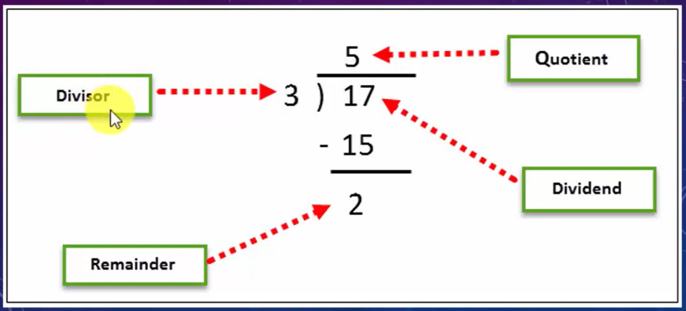
Program : Create a program to show the common usecase of arithmetic operators.
Program.cs
using System;
class Program
{
public static void Main()
{
int a = 10, b = 5, c, d, e, f, g;
c = a + b;
d = a - b;
e = a * b;
f = a / b;
g = a % b;
Console.WriteLine("Addition of {0} and {1} is : {2}",a,b,c);
Console.WriteLine("Substraction of {0} and {1} is : {2}", a, b, d);
Console.WriteLine("Multiplication of {0} and {1} is : {2}", a, b, e);
Console.WriteLine("Division of {0} and {1} is : {2}", a , b, f);
Console.WriteLine("Modulous of {0} and {1} is : {2}", a, b, g);
}
}
RELATIONAL OR COMPARISON OPERATORS
Relational Operators
Relational operators make a comparison between two operands and return a boolean value, true or false.
==
!=
>
<
>=
<=
Program :Create a simple program to show the return value of a relational operator.
Program.cs
using System;
class Program
{
public static void Main()
{
int a = 10, b = 20;
bool c = a <= b;
Console.WriteLine(c);
if (c) Console.WriteLine("a is less than or equal to b");
else Console.WriteLine("a is greater than b");
}
}
LOGICAL OR CONDITIONAL OPERATORS
Logical Operators
Logical operators perform boolean logical operations on both the operands. They return a boolean value based on the logical operator used.
There are two types of conditional operators.
CONDITIONAL AND (&&)
CONDITIONAL OR (||).
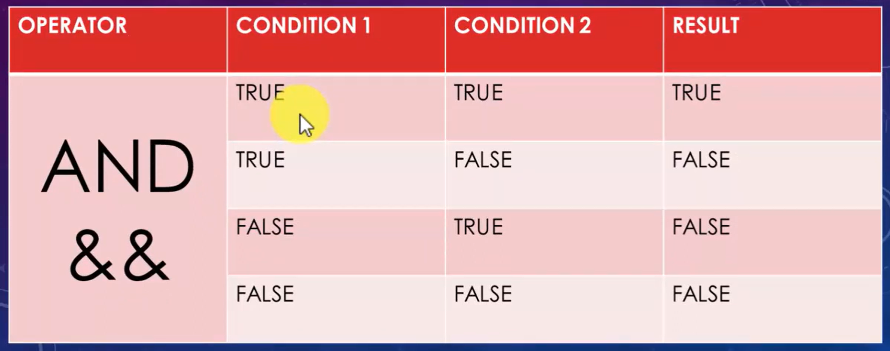
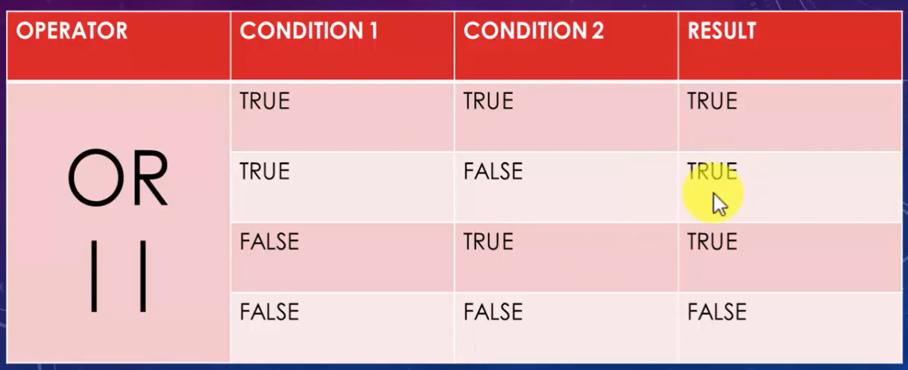
Program : Write a simple program to show the usecase of conditional operator.
Program.cs
using System;
class Program
{
public static void Main()
{
int a = 10, b = 20;
bool c = a < b && b > a ;
Console.WriteLine(c);
if (c) Console.WriteLine("a is less than b");
else Console.WriteLine("a is greater than b");
}
}
ASSIGNMENT OPERATORS IN C#
Assignment Operators
Assignment operators are used to assign the value of the right side operand to the operand on the left side using the equal to operator (=).
The assignment operators are divided into two categories in C#. These are as follows:
Simple assignment operators: The simple assignment operator is which is used to assign a value or result of an expression to a variable.
Compound assignment operators: The compound assignment operators are formed by combining the simple assignment operator with the arithmetic operators.
Program : Write a simple program to show the usecase of compound assignment operator.
Program.cs
using System;
class Program
{
public static void Main()
{
int a = 10;
a+=5; // a = a + 5
Console.WriteLine(a);
}
}
INCREMENT AND DECREMENT OPERATORS
Increment & Decrement Operators
Two of the most common calculations performed in programming are increasing and decreasing the value of the variable by 1.
In C#, the increment operator (++) is used to increase the value by 1 while the decrement operator (--) is used to decrease the value by 1.
If the operator is placed before the operand, the expression is called pre-increment or pre-decrement.
If the operator is placed after the operand, the expression is called post-increment or post-decrement.
Program :Write a simple example to show the usecase of pre and post increment operator.
Program.cs
using System;
class Program
{
public static void Main()
{
int a = 5;
//Post Increment : First the value is incremented and post it is assigned.
Console.WriteLine(a++); //5
Console.WriteLine(a); //6
Console.WriteLine(++a); //7
Console.WriteLine(a); //7
}
}
TERNARY OR CONDITIONAL OPERATORS
Ternary Operators
C# includes a special type of decision making operator ? : called the ternary operator.
Syntax: Boolean Expression ? First Statement : Second Statement
Program : Create a simple program to show the usecase of ternary operator.
Program.cs
using System;
class Program
{
public static void Main()
{
int a = 5, b = 10;
string c = a > b ? "a is greater" : "a is smaller";
Console.WriteLine(c);
Console.WriteLine("Please enter your age?");
int age = int.Parse(Console.ReadLine());
string result=age>=18?"You are Eligible to vote.": "You are Not Eligible to vote.";
Console.WriteLine(result);
}
}
PRECEDENCE OF OPERATORS
Precedence of Operators
Operators in C# have certain associated priority levels.
The C# compiler executes operators in the sequence defined by the priority level of the operators.
EXAMPLE: 8/2-3+2*2
Brackets have the highest precedence.
Precedence level : / * , + -
/ and * ka precedence same hai to hum left to right operation krenge.
Program : Create a program to show the precedence of operators.
Program.cs
using System;
class Program
{
public static void Main()
{
int a = 8 / 2 - 3 + 2 * 2;
// 4 - 3 + 2 * 2
// 4 - 3 + 4
// 1 + 4
// 5
Console.WriteLine(a);
}
}
SELECTION STATEMENTS IN C#
SELECTION CONSTRUCT OR STATEMENT
Is a programming construct supported by C# that controls the flow of a program.
Executes a particular block of statements based on a boolean condition, which is an expression returning true or false.
Is referred to as a decision-making construct.
Allow you to take logical decisions about executing different blocks of a program to achieve the required logical output.
C# supports the following decision-making constructs:
if...else
if...else...if
Nested if
switch...case
Nested Switch Case
THE IF STATEMENT
The if statement allows you to execute a block of statements after evaluating the specified logical condition.
The if statement starts with the if keyword and is followed by the condition.
If the condition evaluates to true, the block of statements following the if statement is executed.
If the condition evaluates to false, the block of statements following the if statement is ignored and the statement after the block is executed.
Program : Take username and password from user. If username and password is correct print "Login Successful" else "Invalid Username/Password".
Program.cs
using System;
class Program
{
public static void Main()
{
Console.WriteLine("Enter Username ");
string username=Console.ReadLine();
Console.WriteLine("Enter Password ");
string password=Console.ReadLine();
if(username=="Kumar" && password == "test123")
{
Console.WriteLine("Login Successfull");
}
else
{
Console.WriteLine("Invalid Username/Password");
}
}
}
THE IF-ELSE-IF STATEMENT
If..else..if Statement
The if...else...if construct allows you to check multiple conditions to execute a different block of code for each condition.
It is also referred to as if-else-if ladder.
The construct starts with the if statement followed by multiple else if statements followed by an optional else block.
The conditions specified in the if...else...if construct are evaluated sequentially.
The execution starts from the if statement. If a condition evaluates to false, the condition specified in the following else...if statement is evaluated.
Program : Use if-else-if statement to print the grade according to the marks provided by the user.
Program.cs
using System;
class Program
{
public static void Main()
{
Console.WriteLine("Enter you percentage? ");
int percentage=int.Parse(Console.ReadLine());
if(percentage >= 90)
{
Console.WriteLine("Your grade is : Grade A-1");
}
else if (percentage >= 80)
{
Console.WriteLine("Your grade is : Grade A");
}
else if (percentage >= 70)
{
Console.WriteLine("Your grade is : Grade B");
}
else if (percentage >= 60)
{
Console.WriteLine("Your grade is : Grade C");
}
else if (percentage >= 50)
{
Console.WriteLine("Your grade is : Grade D");
}
else if (percentage >= 33)
{
Console.WriteLine("Your grade is : Grade E");
}
else
{
Console.WriteLine("Fail");
}
}
}
NESTED IF CONSTRUCT
Nested If
The nested if construct consists of multiple if statements.
The nested if construct starts with the if statement, which is called the outer if statement, and contains multiple if statements, which are called inner if statements.
In the nested if construct, the outer if condition controls the execution of the inner if statements. The compiler executes the inner if statements only if the condition in the outer if statement is true.
In addition, each inner if statement is executed only if the condition in its previous inner if statement is true.
Program : Create a program to show a basic example of nested if construct.
Program.cs
using System;
class Program
{
public static void Main()
{
Console.WriteLine("Enter a number?");
int num=int.Parse(Console.ReadLine());
if(num > 5)
{
if (num == 10)
{
Console.WriteLine("Number is 10.");
}
else
{
Console.WriteLine("Number is not 10.");
}
}
else
{
if(num == 5) {
Console.WriteLine("Number is 5.");
}
else
{
Console.WriteLine("Number is not 5.");
}
}
}
}
Program : Create a program to take user email if it valid then only ask for password else print Invalid email using nested if.
Program.cs
using System;
class Program
{
public static void Main()
{
Console.WriteLine("Enter your Email");
string email=Console.ReadLine();
if(email == "admin@test.com")
{
Console.WriteLine("Plaese enter your password.");
string password=Console.ReadLine();
if (password == "test123")
{
Console.WriteLine("Login Successful.");
}
else
{
Console.WriteLine("Wrong Password.");
}
}
else
{
Console.WriteLine("Email does not exist.");
}
}
}
SWITCH...CASE CONSTRUCT
Switch Case
A program is difficult to comprehend when there are too many if statements representing multiple selection constructs.
To avoid using multiple if statements, in certain cases, the switch...case approach can be used as an alternative.
The switch...case statement is used when a variable needs to be compared against different values.
In C#, the flow of execution from one case statement is not allowed to continue to the next case statement and is referred to as the 'no-fall-through' rule of C#.
Program : Take Week Day in number from the user and print the week day of that number using switch case.
Program.cs
using System;
class Program
{
public static void Main()
{
Console.WriteLine("Enter Week Day Number");
int week_day = int.Parse(Console.ReadLine());
switch (week_day)
{
case 0:
Console.WriteLine("Monday");
break;
case 2:
Console.WriteLine("Tuesday");
break;
case 3:
Console.WriteLine("Wednesday");
break;
case 4:
Console.WriteLine("Thrusday");
break;
case 5:
Console.WriteLine("Friday");
break;
case 6:
Console.WriteLine("Saturday");
break;
case 7:
Console.WriteLine("Sunday");
break;
default:
Console.WriteLine("Invalid Week Number.");
break;
}
}
}
Program : Create a program using switch statement to print "You are not eligible to vote" is case of age supplied is 15, 16 and 17. In case of 18,19,20 print "You are eligible to vote."
Program.cs
using System;
class Program
{
public static void Main()
{
Console.WriteLine("Enter You Age?");
int age = int.Parse(Console.ReadLine());
switch (age)
{
case 15:
case 16:
case 17:
Console.WriteLine("You are not eligible to vote");
break;
case 18:
case 19:
case 20:
Console.WriteLine("You are eligible to vote.");
break;
default:
Console.WriteLine("Invalid Age");
break;
}
}
}
NESTED-SWITCH...CASE CONSTRUCT
Nested Switch
C# allows the switch...case construct to be nested. That is, a case block of a switch...case construct can contain another switch...case construct.
Also, the case constants of the inner switch...case construct can have values that are identical to the case constants of the outer construct.
Program : Create a pizza app to select pizza using nested switch.
Program.cs
using System;
class Program
{
public static void Main()
{
Console.WriteLine("Enter Your Pizza?");
string pizza = Console.ReadLine();
switch (pizza)
{
case "supreme":
Console.WriteLine("You have selected Supreme Pizza.");
break;
case "cheese":
Console.WriteLine("You have selected Cheese Pizza.");
break;
case "vegetable":
Console.WriteLine("Enter your Vegitable : ");
string veg = Console.ReadLine();
switch (veg)
{
case "olive":
Console.WriteLine("You have selected Olive in your Pizza.");
break;
case "onion":
Console.WriteLine("You have selected Onion in your Pizza.");
break;
case "garlic":
Console.WriteLine("You have selected Garlic in your Pizza.");
break;
case "mushroom":
Console.WriteLine("You have selected Mushroom in your Pizza.");
break;
default :
Console.WriteLine("Vegitable not available.");
break;
}
break;
default:
Console.WriteLine("Pizza not available.");
break;
}
}
}
Marksheet Console Program
Program : Create a marksheet for student using different statements.
Program.cs
using System;
class Program
{
public static void Main()
{
Console.WriteLine("Enter Your Name?");
string name = Console.ReadLine();
Console.WriteLine("Enter Your Class?");
int standard = int.Parse(Console.ReadLine());
Console.WriteLine("Enter Your Roll No. ?");
int roll=int.Parse(Console.ReadLine());
Console.WriteLine("Enter Your Hindi Marks");
int hindi=int.Parse(Console.ReadLine());
Console.WriteLine("Enter Your English Marks");
int english = int.Parse(Console.ReadLine());
Console.WriteLine("Enter Your Math Marks");
int math = int.Parse(Console.ReadLine());
Console.WriteLine("Enter Your Science Marks");
int science = int.Parse(Console.ReadLine());
Console.WriteLine("Enter Your Social Science Marks");
int sst = int.Parse(Console.ReadLine());
int obt=hindi+english+math+science+sst;
int per = obt * 100 / 500;
Console.WriteLine("-----------Marksheet------------");
Console.WriteLine("Your Name is : {0}",name);
Console.WriteLine("Your Roll No. is : {0}", roll);
Console.WriteLine("Your Class is : {0}", standard);
Console.WriteLine("Your Obtained Marks is : {0}", obt);
Console.WriteLine("Your Percentage is : {0}", per);
//if else if for grade
if (per >= 80)
{
Console.WriteLine("Grade : A+");
}
else if (per >= 70)
{
Console.WriteLine("Grade : A");
}
else if (per >= 60)
{
Console.WriteLine("Grade : B");
}
else if (per >= 60)
{
Console.WriteLine("Grade : C");
}
else if (per >= 50)
{
Console.WriteLine("Grade : D");
}
else if (per >= 33)
{
Console.WriteLine("Grade : E");
}
else
{
Console.WriteLine("Fail.");
}
//if else if for remarks
if (per >= 80)
{
Console.WriteLine("Remarks : Excellent");
}
else if (per >= 70)
{
Console.WriteLine("Remarks : Very Good");
}
else if (per >= 60)
{
Console.WriteLine("Remarks : Good");
}
else if (per >= 60)
{
Console.WriteLine("Remarks : Fair");
}
else if (per >= 50)
{
Console.WriteLine("Remarks : Need lots of improvement.");
}
else if (per >= 33)
{
Console.WriteLine("Remarks : Poor");
}
else
{
Console.WriteLine("Remarks : Very Poor");
}
int supply = 0;
if (hindi < 33) { supply++; Console.WriteLine("You have supply in Hindi."); }
if (english < 33) { supply++; Console.WriteLine("You have supply in English."); }
if (math < 33) { supply++; Console.WriteLine("You have supply in Math."); }
if (science < 33) { supply++; Console.WriteLine("You have supply in Science."); }
if (sst < 33) { supply++; Console.WriteLine("You have supply in Social Science."); }
Console.WriteLine("You are failed in {0} subject.",supply);
}
}
LOOP CONSTRUCTS OR STATEMENTS IN C#
Loop construct
Loops allow you to execute a single statement or a block of statements repetitively.
The most common uses of loops include displaying a series of numbers and taking repetitive input.
In software programming, a loop construct contains a condition that helps the compiler identify the number of times a specific block will be executed.
If the condition is not specified, the loop continues infinitely and is termed as an infinite loop.
The loop constructs are also referred to as iteration statements.
C# supports four types of loop constructs such as: 1. The for loop 2. The while loop 3. The do..while loop 4. The foreach loop
The For Loop
The for statement is similar to the while statement in function.
The statements within the body of the loop are executed as long as the condition is true.
Here too, the condition is checked before the statements are executed.
There are 3 things in FOR LOOP: Initialization Condition Increment/decrement
Program :Take a number from user and print the table using for loop.
Program.cs
using System;
class Program
{
public static void Main()
{
Console.WriteLine("Please Enter a number for Table.");
int num = int.Parse(Console.ReadLine());
for(int i=1;i<=10; i++) {
Console.WriteLine("{0} X {1} = {2}",num,i,num*i);
}
}
}
THE WHILE LOOP
While Loop
The while loop is used to execute a block of code repetitively as long as the condition of the loop remains true.
The while loop consists of the while statement, which begins with the while keyword followed by a boolean condition.
If the condition evaluates to true, the block of statements after the while statement is executed.
After each iteration, the control is transferred back to the while statement and the condition is checked again for another round of execution.
When the condition is evaluated to false, the block of statements following the while statement is ignored and the statement appearing after the block is executed by the compiler.
Program : Take a number from user and print the table using while loop.
Program.cs
using System;
class Program
{
public static void Main()
{
Console.WriteLine("Please Enter a number for Table.");
int num = int.Parse(Console.ReadLine());
int i = 1;
while (i <=10)
{
Console.WriteLine("{0} X {1} = {2}", num, i, num * i);
i++;
}
}
}
THE DO-WHILE LOOP
Do While Loop
The do-while loop is similar to the while loop; however, it is always executed at least once without the condition being checked.
The loop starts with the do keyword and is followed by a block of executable statements.
The while statement along with the condition appears at the end of this block.
The statements in the do-while loop are executed as long as the specified condition remains true.
When the condition evaluates to false, the block of statements after the do keyword are ignored and the immediate statement after the while statement is executed.
Program : Take a number from user and print the table using do while loop.
Program.cs
using System;
class Program
{
public static void Main()
{
Console.WriteLine("Please Enter a number for Table.");
int num = int.Parse(Console.ReadLine());
int i = 1;
do
{
Console.WriteLine("{0} X {1} = {2}", num, i, num * i);
i++;
} while (i <= 10);
}
}
DIFFERENCE BETWEEN FOR LOOP AND WHILE LOOP IN C#
For Vs While Loop
For loop k andar i declare kiye usko bahar use nhi kr skte jabki while me declaration bahar hoti hai to use kbi bhi use kr skte hai.
For loop me bhi hum i ko bahar declare kr skte hai aur aage kbhi bhi use kr skte hain.
Genearally jab hme pta ho ki loop kitni baar execute krega to use krenge for loop nhi to while loop.
Program : Create a for loop , declare a initialize its value outside the for loop and use that variable outside the for loop to print a statement.
Program.cs
using System;
class Program
{
public static void Main()
{
Console.WriteLine("Please Enter a number.");
int num = int.Parse(Console.ReadLine());
for(;num <= 10; num++)
{
Console.WriteLine("Inside for loop.");
}
Console.WriteLine("Outside the for loop and the value of the number supplied is now {0}", num);
}
}
NESTED FOR LOOP
Nested For Loop
The nested for loop consists of multiple for statements.
When one for loop is enclosed inside another for loop, the loops are said to be nested.
The for loop that encloses the other for loop is referred to as the outer for loop whereas the enclosed for loop is referred to as the inner for loop.
The outer for loop determines the number of times the inner for loop will be invoked.
Program : Create two loops one inside another and print upto 5 iterations to ilustrate the concept of nested for loop.
Program.cs
using System;
class Program
{
public static void Main()
{
for(int i=1; i<=5;i++)
{
Console.WriteLine("Outer For Loop.");
for(int j=1; j <= i; j++)
{
Console.WriteLine("\t Inner For Loop.");
}
}
}
}
JUMP STATEMENTS IN C#
Jump Statements
Jump statements are used to transfer control from one point in a program to another.
There will be situations where you need to exit out of a loop prematurely and continue with the program.
In such cases, jump statements are used. Jump statement unconditionally transfer control of a program to a different location.
The location to which a jump statement transfers control is called the target of the jump statement.
C# supports four types of jump statements. These are as follows: break continue goto return
Break Statement
The break statement is used in the selection and loop constructs.
It is most widely used in the switch...case construct and in the for and while loops.
The break statement is denoted by the break keyword. In the switch...case construct, it is used to terminate the execution of the construct.
In loops, it is used to exit the loop without testing the loop condition.
In this case, the control passes to the next statement following the loop.
Continue Statement
The continue statement is most widely used in the loop constructs and is denoted by the continue keyword.
The continue statement is used to end the current iteration of the loop and transfer the program control back to the beginning of the loop.
The statements of the loop following the continue statement are ignored in the current iteration.
Goto Statement
The goto statement allows you to directly execute a labeled statement or a labeled block of statements.
A labeled block or a labeled statement starts with a label. A label is an identifier ending with a colon.
A single labeled block can be referred by more than one goto statements.
The goto statement is denoted by the goto keyword
Program : Create a for loop for 10 iterations, stop it at 5th iteration using break statement.
Program.cs
using System;
class Program
{
public static void Main()
{
for(int i=1; i<=10;i++)
{
if (i == 5) break;
Console.WriteLine("Inside Loop...Iteration {0}",i);
}
Console.WriteLine("Outside Loop...Loop terminated.");
}
}
Program : Create a for loop for 10 iterations, skip it at 5th iteration using continue statement.
Program.cs
using System;
class Program
{
public static void Main()
{
for(int i=1; i<=10;i++)
{
if (i == 5) continue;
Console.WriteLine("Inside Loop...Iteration {0}",i);
}
Console.WriteLine("Outside Loop...Loop terminated.");
}
}
Program : Create a program to print even numbers using continue statement.
Program.cs
using System;
class Program
{
public static void Main()
{
for(int i=1; i<=10;i++)
{
if (i%2 == 1) continue;
Console.WriteLine("Number is : {0}",i);
}
}
}
Program : Create a for loop to print the iteration but at 5th iteration it will jump to a code outside the loop using goto statement.
Program.cs
using System;
class Program
{
public static void Main()
{
for(int i=1; i<=10;i++)
{
if (i == 5) goto stop;
Console.WriteLine("Iteration : {0}",i);
}
Console.WriteLine("Loop terminated.");
stop: Console.WriteLine("Program Exited.");
}
}
HOW TO RESTART C# PROGRAM WITH USER INPUT
Program : Ask the user to restart the program using do while loop.
Program.cs
using System;
class Program
{
public static void Main()
{
string repeat;
do
{
Console.WriteLine("Enter First Number?");
int num1 = int.Parse(Console.ReadLine());
Console.WriteLine("Enter Second Number?");
int num2 = int.Parse(Console.ReadLine());
Console.WriteLine("The sum of {0} and {1} is : {2}",num1,num2,num1+num2);
Console.WriteLine("Do you want to continue?? yes/no ?");
repeat = Console.ReadLine().ToLower();
} while (repeat == "yes");
Console.WriteLine("Thank you...!");
}
}
Program : Ask the user to restart the program using while loop.
Program.cs
using System;
class Program
{
public static void Main()
{
while (true)
{
Console.WriteLine("Enter First Number?");
int num1 = int.Parse(Console.ReadLine());
Console.WriteLine("Enter Second Number?");
int num2 = int.Parse(Console.ReadLine());
Console.WriteLine("The sum of {0} and {1} is : {2}",num1,num2,num1+num2);
Console.WriteLine("Do you want to continue?? yes/no ?");
string repeat = Console.ReadLine().ToLower();
if(repeat == "yes") continue;
else break;
};
Console.WriteLine("Thank you...!");
}
}
Arrays in C#
INTRODUCTION TO ARRAYS
An array is a collection of elements of a single data type stored in adjacent memory locations.
An array: Is a collection of related values placed in contiguous memory locations and these values are referenced using a common array name.
It Simplifies the task of maintaining these values.
An array always stores values of a single data type.
Each value is referred to as an element.
These elements are accessed using subscripts or index numbers that determine the position of the element in the array list.
C# supports zero-based index values in an array.
This means that the first array element has an index number zero while the last element has an index number n-1, where n stands for the total number of elements in the array.
This arrangement of storing values helps in efficient storage of data, easy sorting of data, and easy tracking of length.
Example int[] my_array=new int[3]; my_array[0]=11; my_array[1]=22; my_array[2]=33;
Size is decided by the value supplied. string[] my_array1=new string[] {"Kumar","Saurav","Arpit"}; string[] my_array2={"Kumar","Saurav","Arpit"};
DECLARING ARRAYS
Arrays are reference type variables whose creation involves two steps:
Declaration:
An array declaration specifies the type of data that it can hold and an identifier.
This identifier is basically an array name and is used with a subscript to retrieve or set the data value at that location.
Memory allocation:
Declaring an array does not allocate memory to the array.
INITIALIZING ARRAYS
An array can be:
Created using the new keyword and then initialized.
Initialized at the time of declaration itself, in which case the new keyword is not used.
Creating and initializing an array with the new keyword involves specifying the size of an array.
The number of elements stored in an array depends upon the specified size.
The new keyword allocates memory to the array and values can then be assigned to the array.
Program : Create a program to show the three ways to declare an array.
Program.cs
using System;
class Program
{
public static void Main()
{
int[] my_array = new int[3];
my_array[0] = 11;
my_array[1] = 22;
my_array[2] = 33;
string[] my_array1 = new string[] { "Kumar", "Saurav", "Arpit" };
string[] my_array2 = { "Kumar", "Saurav", "Adil" };
foreach(int i in my_array)
{
Console.Write(i+" ");
}
Console.WriteLine("\n----------------------");
foreach (string i in my_array1)
{
Console.Write(i + " ");
}
Console.WriteLine("\n----------------------");
foreach (string i in my_array2)
{
Console.Write(i + " ");
}
}
}
Arrays with foreach Loop
USING THE FOREACH LOOP FOR ARRAYS
The foreach loop: In C# is an extension of the for loop.
It is used to perform specific actions on large data collections and can even be used on arrays.
Reads every element in the specified array.
Allows you to execute a block of code for each element in the array.
It is particularly useful for reference types, such as strings.
Program : Create an array to store string values and print it with both for and foreach loop.
Program.cs
using System;
class Program
{
public static void Main()
{
string[] my_array = { "One", "Two", "Three", "Four","Five" };
foreach(string str in my_array)
{
Console.Write(str+" ");
}
Console.WriteLine("\n-----------------");
for(int i = 0; i < my_array.Length; i++)
{
Console.Write(my_array[i]+" ");
}
}
}
TYPES OF ARRAYS IN C#
Types of Arrays
Based on how arrays store elements, arrays can be categorized into following two types:
Single-dimensional Arrays
Multi-dimensional Arrays
Single-dimensional Arrays
Elements of a single-dimensional array stored in a single row in allocated memory.
Declaration/initialization same as standard declaration/initialization of arrays.
Elements indexed from O to (n-1), where n is the total number of elements in the array.
Multi-dimensional Arrays
A multi-dimensional array allows you to store combination of values of a single type in two or more dimensions.
The dimensions of the array are represented as rows and columns similar to the rows and columns of a Microsoft Excel sheet.
It is also called array of arrays.
Following are the two types of multi-dimensional arrays:
Rectangular Array
Jagged Array
Rectangular Array
Is a multi-dimensional array where all the specified dimensions have constant values.
Will always have the same number of columns for each row.
There are 3 ways to initialize multidimensional array in C# while declaration.
int[,] arr = new int[3,3] = { { 1, 2, 3}, {4, 5, 6}, {7, 8, 9 }};
int[,] arr = new int[,]{{ 1, 2, 3}, {4, 5, 6}, {7, 8, 9 }}; //We can omit the array size.
int[,] arr={{1, 2, 3}, {4, 5, 6}, {7, 8, 9 }};// We can omit the new operator also.
Program : Create a multi-dimensional array of size 3 by 4. Print the elements of this rectangular array in tabular form.
Program.cs
using System;
class Program
{
public static void Main()
{
int[,] md_array = new int[3, 4]
{
{10,20,30,40 },
{11,22,33,44 },
{12,24,36,48 }
};
Console.WriteLine(md_array[1,3]); //44
Console.WriteLine(md_array.GetLength(0)); //3
Console.WriteLine(md_array.GetLength(1)); //4
Console.WriteLine(md_array.Rank); //2
for(int i = 0; i < md_array.GetLength(0); i++)
{
for(int j = 0; j < md_array.GetLength(1); j++)
{
Console.Write(md_array[i, j]+" ");
}
Console.WriteLine();
}
foreach(int i in md_array)
{
Console.Write(i+" ");
}
}
}
Jagged Array in C#
Jagged Array
Is a multidimensional array where one of the specified dimensions can have varying sizes.
Can have unequal number of columns for each row.
Program : Create a jagged array of 3 rows and multiple columns. Print it using for and foreach loop.
Program.cs
using System;
class Program
{
public static void Main()
{
int[][] my_array1 = new int[3][];
my_array1[0] = new[] { 11, 22, 33, 44, 55, 66, 77 };
my_array1[1] = new[] { 10, 12, 14 };
my_array1[2] = new[] { 12, 24, 36, 48 };
for (int i = 0; i < my_array1.GetLength(0); i++)
{
for (int j = 0; j < my_array1[i].Length; j++)
{
Console.Write(my_array1[i][j] + " ");
}
Console.WriteLine();
}
foreach (int[] items in my_array1)
{
foreach(int item in items)
{
Console.Write(item+" ");
}
Console.WriteLine();
}
}
}
INITIALIZING ARRAY WITH USER INPUT IN C#
Program : Create a program to enter number of data and the data to be stored by the user and display the data one by one in a line as output.
Program.cs
using System;
class Program
{
public static void Main()
{
Console.WriteLine("How many numbers of data you want to store?");
int numbers=int.Parse(Console.ReadLine());
string[] data = new string[numbers];
for(int i = 0; i < data.Length; i++)
{
Console.WriteLine("Enter {0} data : ", i + 1);
data[i] = Console.ReadLine();
}
Console.WriteLine("---------Your Data----------");
foreach (string d in data)
{
Console.Write(d+" ");
}
}
}
METHODS OR FUNCTIONS IN C#
METHODS OR FUNCTIONS
A method is a group of statements that together perform a task.
Methods are functions declared in a class and may be used to perform operations on class variables.
They are blocks of code that can take parameters and may or may not return a value.
It is used to perform specific task.
Methods are reusable.
Every C# program has at least one class with a method named Main.
There are basically two types of methods in C# ie. Static and Instance method.
Conventions to be followed for naming methods
The following syntax is used to create a method:
Cannot be a C# keyword, cannot contain spaces, and cannot begin with a digit Can begin with a letter, underscore, or the "@" character
Some examples of valid method names are: Add(), Sum_Add(), and @Add().
DEFINING METHODS IN C#
The syntax for defining a method in C# is as follows — <Access Specifier> <Return Type> <Method Name>(Parameter List)
{
Method Body
}
INVOKING METHODS
To use a method, you need to —
Define the method
Call the method
A method can be invoked in a class by creating an object of the class where the object name is followed by a period (.) and the name of the method followed by parentheses.
In C#, a method is always invoked from another method.
This is referred to as the calling method and the invoked method is referred to as the called method
A method invocation or call is stored in the stack in memory.
Method Parameters and Arguments
Parameters: The variables included in a method definition are called parameters.
Which may have zero or more parameters, enclosed in parentheses and separated by commas.
If the method takes no parameters, it is indicated by empty parentheses.
Arguments: When the method is called, the data that you send into the Arguments for method's parameters are called arguments.
According to parameters there are 2 types of methods.
A method in a C# program can accept multiple arguments that are passed based on the position of the parameters in the method signature.
A method caller can explicitly name one or more arguments being passed to the method instead of passing the arguments based on their position.
An argument passed by its name instead of its position is called a named argument.
While passing named arguments, the order of the arguments declared in the method does not matter.
Named arguments are beneficial because you do not have to remember the exact order of parameters in the parameter list of methods.
RETURN KEYWORD IN C#
The return statement is used to return value.
When a program calls a function, the program control is transferred to the called function.
ADVANTAGES OF USING THE METHODS
There are many advantages of using methods. Some of them are listed below:
It makes the program well structured.
Methods enhance the readability of the code.
It provides an effective way for the user to reuse the existing code.
It optimizes the execution time and memory space.
Program : Create a program to show the .calling of static and instance method. Also create a parameterised method where provide a default value if the user do not specify any value.
Program.cs
using System;
class Program
{
//Declaring Methods
//Instance Method
public void Show()
{
Console.WriteLine("Instance Method.");
}
public static void ShowOne()
{
Console.WriteLine("Static Method.");
}
public void Greeting(string user="User")
{
Console.WriteLine("Welcome {0}",user);
}
public static void Main()
{
//Calling Method
Program p1=new Program();
p1.Show();
Program.ShowOne();
p1.Greeting();
p1.Greeting("Kumar");
}
}
Program : Create a program to take user name and age and print it back but the function is called using named agrument.
Program.cs
using System;
class Program
{
public void PrintNameAge(string name,int age)
{
Console.WriteLine("Your name is {0} and you are {1} years old.",name,age);
}
public static void Main()
{
Program p1=new Program();
p1.PrintNameAge(age: 26, name: "Kumar"); //Named Argument
}
}
Calculator Application
Program : Create a calculator application to perform Addition , Subtration, Multiplication, Division using decision making statement and conditional operators.
Program.cs
using System;
class Program
{
public static void Addition(int a,int b)
{
Console.WriteLine("The Sum of {0} and {1} is : {2}",a,b,a+b);
}
public static void Subtraction(int a, int b)
{
Console.WriteLine("The Difference of {0} and {1} is : {2}", a, b, a - b);
}
public static void Multiplication(int a, int b)
{
Console.WriteLine("The Product of {0} and {1} is : {2}", a, b, a * b);
}
public static void Division(int a, int b)
{
Console.WriteLine("The Division of {0} and {1} is : {2}", a, b, a / b);
}
static void Main()
{
Console.WriteLine("Enter first number");
int num1=int.Parse(Console.ReadLine());
Console.WriteLine("Enter second number");
int num2 = int.Parse(Console.ReadLine());
Console.WriteLine("Enter Operation + , - , * , /");
string operation = Console.ReadLine();
//if (operation.Equals("+")) Program.Addition(num1, num2);
//else if (operation.Equals("-")) Program.Subtraction(num1, num2);
//else if (operation.Equals("*")) Program.Multiplication(num1, num2);
//else if (operation.Equals("/")) Program.Division(num1, num2);
switch (operation)
{
case "+":
Program.Addition(num1, num2);
break;
case "-":
Program.Subtraction(num1, num2);
break;
case "*":
Program.Multiplication(num1, num2);
break;
case "/":
Program.Division(num1, num2);
break;
default:
Console.WriteLine("Invalid Input");
break;
}
}
}
VALUE TYPE VS REFERENCE TYPE IN C#
Value Type and Reference Type
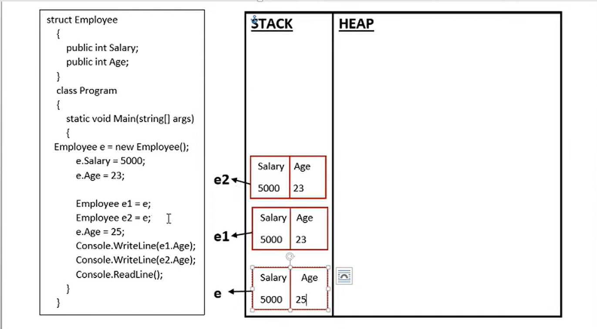
Stack me har baar nayi object ban rhi to ektime k baad exception milegi stack overflow.
Program : Create a struct Employee containing properties like Age. Create three objects of Employee and copy first to both second and third. Change the Age of first object and show that it will not change the other two objects Age value.
Program.cs
using System;
struct Employee
{
public int Age { get; set; }
}
class Program
{
static void Main()
{
Employee e = new Employee();
e.Age = 25;
Employee e1 = new Employee();
Employee e2 = new Employee();
e1 = e;
e2 = e;
e.Age = 28;
Console.WriteLine(e.Age);
Console.WriteLine(e1.Age);
Console.WriteLine(e2.Age);
}
}
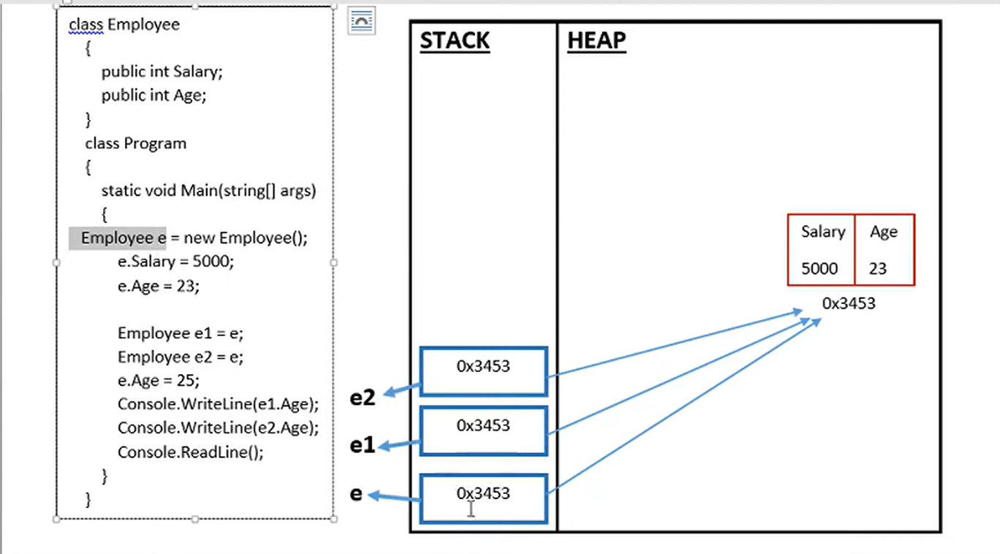
Program : Create the same Program by using Reference Type Class to show that no extra block is created for every object resulting in memory management.
Program.cs
using System;
class Employee
{
public int Age { get; set; }
}
class Program
{
static void Main()
{
Employee e = new Employee();
e.Age = 25;
Employee e1 = new Employee();
Employee e2 = new Employee();
e1 = e;
e2 = e;
e.Age = 28;
Console.WriteLine(e.Age);
Console.WriteLine(e1.Age);
Console.WriteLine(e2.Age);
}
}
VALUE TYPE
A data type is a value type if it holds a data value within its own memory space. It means variables Of these data types directly contain their values.
The following data types are all of value type:
bool
byte
char
decimal
double
enum
float
int
long
short
struct
uint
ulong
ushort
REFERENCE TYPE
Unlike value types, a reference type doesn't store its value directly. Instead, it stores the address where the value is being stored. In other words, a reference type contains a pointer to another memory location that holds the data.
The following data types are of reference type:
String
All arrays, even if their elements are value types
Class
object
Interface
Difference between value type and reference types.
Value Type
Reference Type
They are stored on stack memory
They are stored on heap memory
Contains actual value
Contains reference to a value
Cannot contain null values. However this can be achieved by nullable types
Can contain null values.
Memory is allocated at compile time
Memory is allocated at run time
Difference between Stack and Heap.
Stack
Heap
Values are stored on one another like a stack.
Values are stored in random order like dumped into a huge space
Used for value type
Used for reference type
PASS BY VALUE AND PASS BY REFERENCE IN C# (REF AND OUT KEYWORDS)
Pass By Value & Reference Types
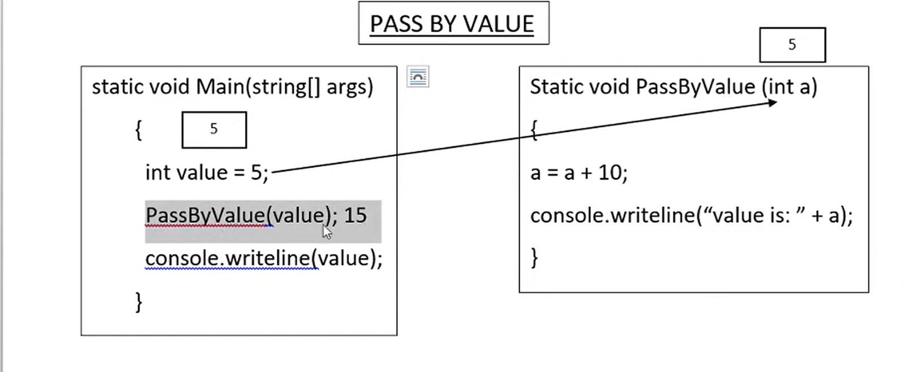
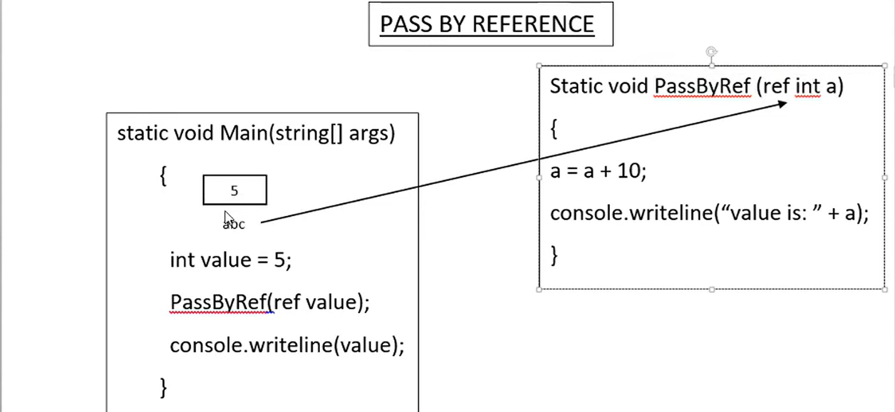
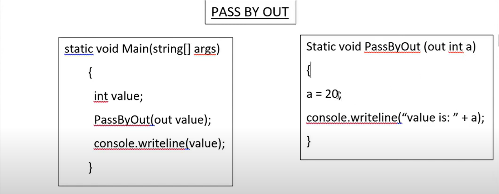
Program : Create two functions PassByValue and PassByReference to show the difference between these two.Also create a function PassByOut to show the use of out keyword.
Program.cs
using System;
class Program
{
public void PassByValue(int a)
{
a += 10;
Console.WriteLine("Value of a is : "+a);
}
public void PassByReference(ref int a)
{
a += 10;
Console.WriteLine("Value of a is : " + a);
}
public void PassByOut(out int a)
{
a = 20;
Console.WriteLine("Value of a is : " + a);
}
static void Main()
{
Program p=new Program();
int value = 5;
p.PassByValue(value);
Console.WriteLine(value);
p.PassByReference(ref value);
Console.WriteLine(value);
p.PassByOut(out value);
Console.WriteLine(value);
}
}
PASS BY REFERENCE (REF KEYWORD)
The ref keyword causes arguments to be passed in a method by reference.
In call by reference, the called method changes the value of the parameters passed to it from the calling method.
Any changes made to the parameters in the called method will be reflected in the parameters passed from the calling method when control passes back to the calling method.
It is necessary that both the called method and the calling method must explicitly specify the ref keyword before the required parameters.
The variables passed by reference from the calling method must be first initialized.
OUT KEYWORD
The out keyword is similar to the ref keyword and causes arguments to be passed by reference.
The only difference between the two is that the out keyword does not require the variables that are passed by reference to be initialized.
Both the called method and the calling method must explicitly use the out keyword.
VAR AND DYNAMIC KEYWORDS IN C#
VAR KEYWORD
VAR WAS INTRODUCED IN 3.0.
VAR KEYWORD IS USED TO STORE ANY TYPE OF DATA IN ITS VARIABLE.
VALUE OF VAR VARIABLE IS DECIDED AT COMPILE TIME.
WE HAVE TO INITIALIZE THE VARIABLE WITH VAR KEYWORD.
IF WE WANT TO CHECK THE TYPE OF VALUE WHICH IS STORED IN VAR VARIABLE THEN WE CAN USE GetType() METHOD WITH THE VAR VARIABLE.
WHEN WE INITIALIZE THE VAR VARIABLE WITH SOME VALUE THEN WE CANNOT CHANGE THE VALUE OF VAR VARIABLE WITH SOME OTHER DATA TYPE VALUE.
WE CAN USE ALL THE METHODS OF PARTICULAR TYPE VALUE WHICH IS STORED IN VAR VARIABLE.e
INTELLISENSE HELP IS AVAILABLE FOR THE VAR TYPE OF VARIABLES. THIS IS BECAUSE, ITS TYPE IS INFERRED BY THE COMPILER FROM THE TYPE OF VALUE IT IS ASSIGNED AND AS A RESULT, THE COMPILER HAS ALL THE INFORMATION RELATED TO THE TYPE.
VAR VARIABLES CANNOT BE USED FOR PROPERTY OR RETURN VALUES FROM A FUNCTION. THEY CAN ONLY BE USED AS LOCAL VARIABLE IN A FUNCTION.
WE CANNOT USE VAR VARIABLE AS A FUNCTION PARAMETER.
VAR KEYWORD IS OF VALUE TYPE.
DYNAMIC KEYWORD
DYNAMIC WAS INTRODUCED IN C#4.0
DYNAMIC KEYWORD IS kLS0 USED TO STORE ANY TYPE OF DATA IN ITS VARIABLE.
VALUE OF DYNAMIC VARIABLE IS DECIDED AT RUN TIME.
INITIALIZATION IS NOT MANDATORY WHEN WE DECLARE A VARIABLE WITH DYNAMIC KEYWORD.
IF WE WANT TO CHECK THE TYPE OF VALUE WHICH IS STORED IN DYNAMIC VARIABLE THEN WE CAN USE METHOD WITH THE DYNAMIC VARIABLE.
WHEN WE INITIALIZE THE DYNAMIC VARIABLE WITH SOME VALUE THEN WE CAN CHANGE THE VALUE OF DYNAMIC VARIABLE WITH SOME OTHER DATA TYPE VALUE.
INTELLISENSE HELP IS NOT AVAILABLE FOR DYNAMIC TYPE OF VARIABLES SINCE THEIR TYPE IS UNKNOWN UNTIL RUN TIME. SO INTELLISENSE HELP IS NOT AVAILABLE.
DYNAMIC VARIABLES CAN BE USED TO CREATE PROPERTIES AND RETURN VALUES FROM A FUNCTION.
WE CAN USE DYNAMIC VARIABLE AS A FUNCTION PARAMETER.
DYNAMIC KEYWORD IS OF REFERENCE TYPE.
Program : Create a Sample program to show the use var and dynamic keyword.
Program.cs
using System;
class Program
{
public static void Show(dynamic a)
{
Console.WriteLine(a);
}
static void Main()
{
var a = "Kumar";
//a = 65; //Not Possible, can be set once on declaration.
Console.WriteLine(a.GetType());
Console.WriteLine(a.ToUpper());
dynamic b = "Saurav";
b = 45;
Console.WriteLine(b.GetType());
Show(a);
Show(b);
Show(true);
}
}
CLASSES AND OBJECTS IN C#
Class & Object
C# programs are composed of classes that represent the program which also include code to instantiate the classes objects.
When the program runs, objects are created for the classes and they may interact with each other to provide the functionalities of the program.
An object is a tangible entity such as a car, a table, or a briefcase.
Every object has some characteristics and is capable of performing certain actions.
The concept of objects in the real world can also be extended to the programming world. An object in a programming language has a unique identity, state, and behavior.
The state of the object refers to its characteristics or attributes whereas the behavior of the object comprises its actions.
An object has various features that can describe it which could be the company name, model, price, mileage, and so on.
An object stores its identity and state in fields (also called variables) and exposes its behavior through methods.
The concept of classes in the real world can be extended to the programming world, similar to the concept of objects.
Program : Create a class Student with properties like RollNo,Name,Class and Age. Create one method to set all the details and another method to display all the details.
Program.cs
using System;
class Student
{
public int Id { get; set; }
public string Name { get; set; }
public int Standard { get; set; }
public int Age { get; set; }
public void SetStudent(int Id, string Name, int Standard,int Age)
{
this.Id = Id;
this.Name = Name;
this.Standard = Standard;
this.Age = Age;
}
public void GetStudent()
{
Console.WriteLine("Student Roll No. : {0} , Name : {1} , Class : {2} and Age : {3}",this.Id,this.Name,this.Standard,this.Age);
}
}
class Program
{
static void Main()
{
Student student1 = new Student();
student1.SetStudent(101, "Kumar Saurav", 12, 17);
student1.GetStudent();
Student student2 = new Student();
student2.SetStudent(102, "Asad Khan", 11, 15);
student2.GetStudent();
}
}
CONSTRUCTORS IN C#
Constructor
A class constructor is a special member function of a class that executed whenever we create new objects of that class.
A constructor has exactly the same name as that of class and it does not have any return type.
Default Constructor
A constructor which has not defined any parameters or we can say without any parameters is called default constructor. It initializes the same value of every instance of class.
Parameterized Constructor
A constructor which has at least one parameter is called Parameterized Constructor. Using this type of constructor we can initialize each instance of the class to different values.
Program : Create a class Student with properties like RollNo,Name,Class and Age. With the help of parameterized constructor set all the details and with a method display all the details.
Program.cs
using System;
class Student
{
public int Id { get; set; }
public string Name { get; set; }
public int Standard { get; set; }
public int Age { get; set; }
public Student(int Id, string Name, int Standard,int Age)
{
this.Id = Id;
this.Name = Name;
this.Standard = Standard;
this.Age = Age;
}
public void GetStudent()
{
Console.WriteLine("Student Roll No. : {0} , Name : {1} , Class : {2} and Age : {3}",this.Id,this.Name,this.Standard,this.Age);
}
}
class Program
{
static void Main()
{
Student student1 = new Student(101, "Kumar Saurav", 12, 17);
student1.GetStudent();
Student student2 = new Student(102, "Asad Khan", 11, 15);
student2.GetStudent();
}
}
Constructor Overloading in C#
Program : Create a Program to show constructor overloading based on number of parameter and type of parameter.
Program.cs
using System;
class Program
{
public Program()
{
Console.WriteLine("Default Constructor Called.");
}
public Program(int a)
{
Console.WriteLine("Your Input is " + a);
Console.WriteLine("Second Constructor Called.");
}
public Program(int a, int b)
{
Console.WriteLine("Sum of {0} and {1} is {2} ", a, b, a + b);
Console.WriteLine("Third Constructor Called.");
}
public Program(int a, int b, int c)
{
Console.WriteLine("Sum of {0}, {1} and {2} is {3} ", a, b, c, a + b + c);
Console.WriteLine("Fourth Constructor Called.");
}
public Program(string a, string b, string c)
{
Console.WriteLine("Combined value of {0}, {1} and {2} is {3} " , a, b, c, a + b + c);
Console.WriteLine("Fifth Constructor Called.");
}
public static void Main()
{
Program program = new Program();
Program program1 = new Program(5);
Program program2 = new Program(5,10);
Program program3 = new Program(5,10,15);
Program program4 = new Program("A","B","C");
}
}
STATIC AND INSTANCE MEMBERS OF CLASS IN C#
INSTANCE MEMBER
Instance member have a separate copy for each and every object of the class.
Instance member belongs to the objects of the class.
When no static keyword is present the Class member is called non-static or instance member.
Instance or non-static members are invoked using objects of the class.
static methods k sath staic memebers hi use kr skte hain but instance k sath static or non static sare members use kr skte hain.
STATIC MEMBER
Static member belongs to the class.
We can define class members as static using the static keyword.
When we declare a member of a class as static, it means no matter how many objects of the class are created, there is only one copy of the static member.
Static variables are used for defining constants because their values can be retrieved by invoking the class without creating an instance of it.
Static variables can be initialized outside the member function or class definition.
You can also initialize static variables inside the class definition.
You can also declare a member function as static.
Such functions can access only static variables.
Static member are invoked using class name.
Note: Class members can be fields, methods, properties, events, indexers, constructors.
Program : Create a program to declare static and non static members in a class student and show how to use those member inside Main method.
Program.cs
using System;
class Student
{
public int Id { get; set; }
public string firstName { get; set; }
public string lastName { get; set; }
public int standard { get; set; }
public static string schoolName = "ABC School";
public static int fees = 1200;
public string PrintFullName()
{
string fullName=this.firstName+" "+this.lastName;
return fullName;
}
public static int getPaybleFees(int tax)
{
return fees+tax;
}
}
class Program
{
public static void Main()
{
Student Adil = new Student();
Adil.Id = 101;
Adil.firstName = "Adil";
Adil.lastName = "Ansari";
Adil.standard = 10;
Console.WriteLine("Student with Id {0} is {1} of class {2} goes to {3}, has to pay {4}",Adil.Id,Adil.PrintFullName(),Adil.standard,Student.schoolName,Student.getPaybleFees(200));
Student Zyan = new Student();
Zyan.Id = 102;
Zyan.firstName = "Zyan";
Zyan.lastName = "Khan";
Zyan.standard = 10;
Console.WriteLine("Student with Id {0} is {1} of class {2} goes to {3}, has to pay {4}", Zyan.Id, Zyan.PrintFullName(), Zyan.standard, Student.schoolName, Student.getPaybleFees(300));
}
}
STATIC CONSTRUCTOR IN C#
STATIC CONSTRUCTOR
A static constructor is used to initialize static variables Of the class and to perform a particular action only once.
Static constructor is called only once, no matter how many objects you create.
Static constructor is called before instance (default or parameterized) constructor.
A static constructor does not take any parameters and does not use any access modifiers.
KEY POINTS OF STATIC CONSTRUCTOR
Only one static constructor can be created in the class.
It is called automatically before the first instance of the class created.
We cannot call static constructor directly.
Program : Create a program to show the use of static constructor. Create a Person class with static properties like name and age, and a fuction to display those properties. Create a static constructor to initialize the value of those properties.
Program.cs
using System;
class Person
{
public static string Name;
public static int Age;
static Person()
{
Name = "Kumar Saurav";
Age = 26;
Console.WriteLine("Static constructor called");
}
public Person()
{
Console.WriteLine("Default constructor invoked.");
}
public void GetPerson()
{
Console.WriteLine("Person Name is {0} and Age is {1} .",Name,Age);
}
}
class Program
{
public static void Main()
{
Person p = new Person();
p.GetPerson();
Person p2 = new Person();
p2.GetPerson();
}
}
Copy Constructor In C#
Copy Constructor
The constructor which creates an object by copying variables from another object is called a copy constructor. The purpose of a copy constructor is to initialize a new instance to the values of an existing instance.
In c#, Copy Constructor is a parameterized constructor which contains a parameter of same class type. The copy constructor in is useful whenever we want to initialize a new instance to the values of an existing instance.
In simple words, we can say copy constructor is a constructor which copies a data of one object into another object.
Program : Create a Class Person with a constructor to initialize the value of Name and Age. Create another contructor to copy the first constructor value into it.
Program.cs
using System;
class Person
{
string Name;
int Age;
public Person(string Name,int Age)
{
this.Name = Name;
this.Age = Age;
}
public Person(Person person) //copy constructor
{
this.Name = person.Name;
this.Age = person.Age;
}
public void GetPerson()
{
Console.WriteLine("Person Name is {0} and Age is {1} .",Name,Age);
}
}
class Program
{
public static void Main()
{
Person p1 = new Person("Kumar",27);
p1.GetPerson();
Person p2 = new Person(p1);
p2.GetPerson();
}
}
PRIVATE CONSTRUCTOR IN C#
PRIVATE CONSTRUCTOR
When a constructor is created with a private specifier, it is not possible for other classes to derive from this class, neither it is possible to create an instance of this class.
They are usually used in classes that contain static members only.
Some key points of a private constructor
One use of a private constructor is when we have only static members.
Once we provide a constructor that is either private or public or any, the compiler will not add the parameter-less public constructor to the class.
In the presence of parameterless private constructor you cannot create a default constructor.
We cannot inherit the class in which we have a private constructor.
Note : We can have parameters in private constructor.
Program : Create a Class Example with a private constructor so that no default instance of this class can be created and only static methods can be called outside of the class. Also show instance with parameterised constructor can be created easily.
Program.cs
using System;
class Example
{
static int Count;
private Example()
{
}
public Example(int count)
{
count++;
Console.WriteLine("The Incremented value is {0} .", count);
}
public static void GetIncrementValue()
{
Count++;
Console.WriteLine("The Incremented value is {0} .",Count);
}
}
//class Example2 : Example { } //Not possible due to private constructor.
class Program
{
public static void Main()
{
//Example example = new Example(); // Cant create due to private constructor
Example.GetIncrementValue();
Example example = new Example(12);
}
}
STATIC CLASS IN C#
STATIC CLASS
Classes that cannot be instantiated or inherited are known as static classes and the static keyword is used before the class name that consists of static data members and static methods.
It is not possible to create an instance of a static class using the new keyword.
The main features of static classes are as follows:
They can only contain static members.
They cannot be instantiated or inherited and cannot contain instance constructors. However, the developer can create static constructors to initialize the static members.
Program : Create a Sample Program to create a static class and static members.
Program.cs
using System;
static class Product
{
public static int Id;
public static string Name;
public static int Price;
static Product()
{
Id = 101;
Name = "Guitar";
Price = 5000;
}
//public void getProduct1() { } //Cant create instance member
public static void getProduct()
{
Console.WriteLine("Product Id : {0}, Name : {1} and Price : {2}",Id,Name,Price);
}
public static void getDiscount()
{
int d_amount = Price - (Price / 10);
Console.WriteLine("Price after discount is {0}", d_amount);
}
}
//class Items:Product // Static Class cant be derived.
class Program
{
public static void Main()
{
//Product p = new Product(); //Cant create an instance of Static Class
Product.getProduct();
Product.getDiscount();
}
}
DESTRUCTORS IN C# PROGRAMMING
DESTRUCTORS
Destructor is special method which has the same name as the class
but starts with the character ~ before the class name and immediately
de-allocates memory of objects that are no longer required.
Features of destructors
Destructors cannot be overloaded or inherited.
Destructors cannot be explicitly invoked.
Destructors cannot specify access modifiers and cannot take parameters.
Program :
Program.cs
using System;
class Person
{
string Name { get; set; }
int Age { get; set; }
public Person(string name, int age)
{
Name = name;
Age = age;
}
~Person()
{
Console.WriteLine("Destructor has been invoked.");
}
public string GetName() { return Name; }
public int GetAge() { return Age; }
}
class Program
{
public static void Main()
{
Person Adil = new Person("Adil Ansari", 25);
Console.WriteLine("Person Name is {0} and Age is {1}.",Adil.GetName(),Adil.GetAge());
Person Zyan = new Person("Zyan Khan", 27);
Console.WriteLine("Person Name is {0} and Age is {1}.", Zyan.GetName(), Zyan.GetAge());
}
}
INHERITANCE IN C# PROGRAMMING
Inheritance
The similarity in physical features of a child to that of its parents due to the child haying inherited these features from its porents.
Similarly, in inheritance allows you to create a class by deriving the common attributes and methods of an existing class.
Inheritance provides reusability by allowing us to extend an existing class.
The reason behind OOP programming is to promote the reusability Of code and to reduce complexity in code and it is possible by using inheritance.
The inheritance concept is based on a base class and derived class. Let us see the definition of a base and derived class.
BASE CLASS - is the class from which features are to be inherited into another class.
DERIVED CLASS - it is the class in which the base class features are inherited.
Program : Create a Class Employee having fields like Id, Name, Age, Contact. Create another class Permanent Employees having fields like Salary and Hours. Create another class Visiting Employee having fields like VisitingSalary and VisitingHours and inherit it from Employee Class. Show that all the common properties of Employee class is common for both the inherited class inclding thier own properties.
Program.cs
using System;
class Employee
{
public int Id { get; set; }
public string Name { get; set; }
public string Age { get; set; }
public string Contact { get; set; }
}
class PermanentEmployee : Employee
{
public int Salary { get; set; }
public int Hours { get; set; }
}
class VisitingEmployee:Employee
{
public int VisitingSalary { get; set; }
public int VisitingHours { get; set; }
}
class Program
{
public static void Main()
{
PermanentEmployee Asad = new PermanentEmployee();
Asad.Id = 101;
Asad.Name = "Asad Ansari";
Asad.Salary = 10000;
Console.WriteLine("Permanent Employee {0} is having a Salary of {1}",Asad.Name,Asad.Salary);
Console.WriteLine("---------------------------------------");
VisitingEmployee Zyan = new VisitingEmployee();
Zyan.Id = 102;
Zyan.Name = "Zyan Khan";
Zyan.VisitingSalary = 15000;
Console.WriteLine("Visiting Employee {0} is having a Visiting Salary of {1}", Zyan.Name, Zyan.VisitingSalary);
}
}
TYPES OF INHERITANCE IN C#
Types of inheritance
Single
Hierarchical
Multilevel
Multiple (using interface)
SINGLE INHERITANCE
It is the type of inheritance in which there is one base class and one derived class.
Ek base class ki only one single child class hoti hai to single inheritance.
Program : Create a Base class and a Derived class having one method in both. Show Single inheritance such that when an object of derived class is created it can access its method aswell as base class method.
Program.cs
using System;
class Base
{
public void Show1()
{
Console.WriteLine("Base Class Method.");
}
}
class Derived:Base
{
public void Show2()
{
Console.WriteLine("Derived Class Method.");
}
}
class Program
{
public static void Main()
{
Derived d= new Derived();
d.Show1();
d.Show2();
}
}
HIERARCHICAL INHERITANCE
This is the type of inheritance in which there are multiple classes derived from one base class.
This type of inheritance is used when there is a requirement of one class feature that is needed in multiple classes.
Ek base class ki multiple child class hoti hai to hierarchical inheritance.
Program : Create a base class and two chil classes. Show hierarchical inheritance by inheriting both the child class with parent class.
Program.cs
using System;
class Base
{
public void Show1()
{
Console.WriteLine("Base Class Method.");
}
}
class Derived1:Base
{
public void Show2()
{
Console.WriteLine("First Derived Class Method.");
}
}
class Derived2 : Base
{
public void Show3()
{
Console.WriteLine("Second Derived Class Method.");
}
}
class Program
{
public static void Main()
{
Derived1 d1= new Derived1();
d1.Show1();
d1.Show2();
Derived2 d2 = new Derived2();
d2.Show1();
d2.Show3();
}
}
MULTILEVEL INHERITANCE
When one class is derived from another derived class then this type of inheritance is called multilevel inheritance.
Ek Child class ko dusre Child class se inherit kr rhe hum.
Program : Create a Base class and two child classes where first child class will inherit from base and second will inherit first child class to show multilevel inheritance.
Program.cs
using System;
class Base
{
public void Show1()
{
Console.WriteLine("Base Class Method.");
}
}
class Derived1:Base
{
public void Show2()
{
Console.WriteLine("First Derived Class Method.");
}
}
class Derived2 : Derived1
{
public void Show3()
{
Console.WriteLine("Second Derived Class Method.");
}
}
class Program
{
public static void Main()
{
Derived2 d= new Derived2();
d.Show1();
d.Show2();
d.Show3();
}
}
CONSTRUCTOR IN INHERITANCE
Inheritance and constructor
A constructor is a method with the same name as the class name and is invoked automatically when a new instanceå a class is created.
Constructors of both classes must be executed when the object of child class is created.
Sub Class's constructor invokes constructor of super class.
Explicit call to the super class constructor from sub class's can be made using base().
base() should be the first statement of child class constructor.
If u don't write base() explicitly then java compiler implicitly write the base().
Program : Create a Base Class and Derived Class and both have thier constructor to print. Show that when an object of Child class is created then Base class constructor also get invoked automatically.
Program.cs
using System;
class Base
{
public Base()
{
Console.WriteLine("Constructor of Base Class");
}
}
class Derived:Base
{
public Derived()
{
Console.WriteLine("Constructor of Derived Class");
}
}
class Program
{
public static void Main()
{
Derived d=new Derived();
}
}
Program : Create a program to show the hidden base() of Dervided class though parameterized constructor of base class.
Program.cs
using System;
class Base
{
public Base(string message) {
Console.WriteLine("Constructor of Base Class with message... {0}",message);
}
}
class Derived:Base
{
public Derived():base("Hello There!!")
{
Console.WriteLine("Constructor of Derived Class");
}
}
class Program
{
public static void Main()
{
Derived d=new Derived();
}
}
ACCESS SPECIFIERS OR ACCESS MODIFIERS IN C#
ACCESS MODIFIERS
C# provides you with access modifiers that allow you to specify which classes can access the data members of a particular class.
In C#, there are four commonly used access modifiers
public private protected Internal
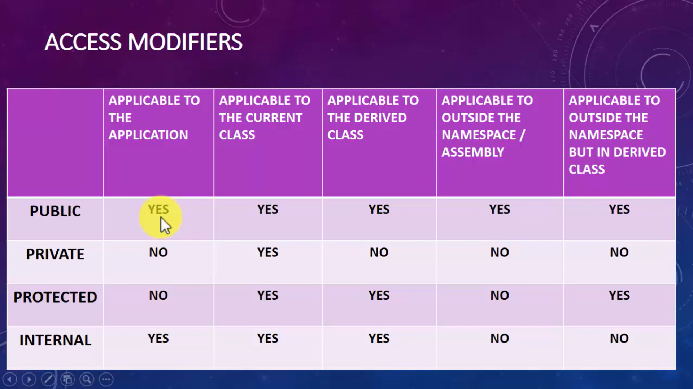
Points to rememeber while working with multiple assembly project.
We can add muliple projects in a solution. Right Click on Solution -> Add New Project
Every Project can have their own Main() method. To select a particular Main() method Right Click on Solution -> Properties -> Select Statrtup Project.
We can use classes of a Project to another Project inside a solution -> Right click on Project's Dependencies -> Add Project Reference -> Check on the desired Project.
Protected vs Internal
Protected is used within same class and in Child class of same or different project.
Internal can be used in same project but not in another project.
RULES FOR ACCESS MODIFIERS
PUBLIC: The public access modifier provides the most permissive access level.
The members declared as public can be accessed anywhere in the class as well as from other classes.
PRIVATE: The private access modifier provides the least permissive access level.
Private members are accessible only within the class in which they are declared.
PROTECTED: The protected access modifier allows the class members to be accessible within the class as well as within the derived classes.
INTERNAL: The internal access modifier allows the class members to be accessible only within the classes of the same namespace / assembly.
An assembly is a file that is automatically generated by the compiler upon successful compilation of a .NET application.
The code declares a variable called NumOne as internal, which means it has only assembly-level access.
ENCAPSULATION IN C#
Encapsulation
Encapsulation is one of the four fundamental OOP concepts. The other three are inheritance, polymorphism, and abstraction.
Encapsulation in C# is a mechanism of wrapping the data(variables) and code acting on the data (methods or properties) together as a single unit.
In encapsulation, the variables of a class will be hidden from other classes, and can be accessed only through the methods or properties of their current class. Therefore, it is also known as data hiding.
In a different way, encapsulation is a protective shield that prevents the data from being accessed by the code outside this shield.
Encapsulation is the procedure of encapsulating data and functions into a single unit (called class)
To achieve encapsulation in C# —
Declare the variables of a class as private.
Provide public setter and getter methods or properties to modify and view the variables values.
BENEFITS OF ENCAPSULATION
The fields of a class can be made read-only or write-only.
A class can have total control over what is stored in its fields.
WHY DO WE NEED ENCAPSULATION
The need of encapsulation is to protect or prevent the code (data)
from accidental corruption due to the silly little errors that we are
all prone to make.
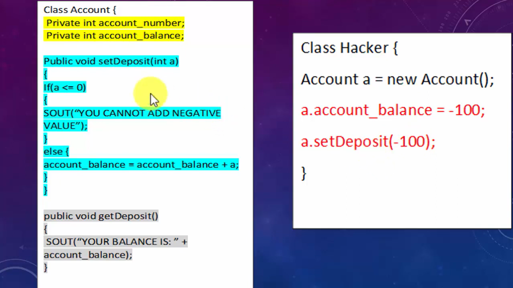
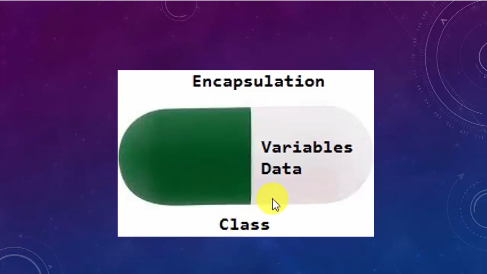
Program : Create a program to show encapsulation. Create a class student having Name and Age, with the help of encapsulation modify the class in such a way that from outside the class no one can set an empty name or negative age in it.
Program.cs
using System;
class Student
{
private string Name;
private int Age;
public void SetName(string name)
{
if (string.IsNullOrEmpty(name))
{
Console.WriteLine("Name should not be blank");
}
else
{
this.Name = name;
}
}
public void GetName()
{
if (string.IsNullOrEmpty(this.Name))
{
}
else
{
Console.WriteLine("Your Name is {0}", this.Name);
}
}
public void SetAge(int Age)
{
if (Age<=0)
{
Console.WriteLine("Age must be greater than 0");
}
else
{
this.Age = Age;
}
}
public void GetAge()
{
if (Age<=0)
{
}
else
{
Console.WriteLine("Your Age is {0}", this.Age);
}
}
}
class Program
{
public static void Main()
{
Student student = new Student();
student.SetName("");
student.GetName();
student.SetAge(-1);
student.GetAge();
student.SetName("Kumar");
student.GetName();
student.SetAge(23);
student.GetAge();
}
}
WHAT ARE PROPERTIES IN C#
Properties
PROPERTIES ALLOW YOUTO CONTROL THE ACCESSIBILITY OF A CLASS VARIABLES, AND ARE THE RECOMMENDED WAY TO ACCESS VARIABLES FROM THE OOTSIDE IN C#.
A PROPERTY IS MUCH LIKE A COMBINATION OF A VARIABLE AND A METHOD - IT CAN'T TAKE ANY PARAMETERS, BUT you ARE ABLE TO PROCESS THE VALUE BEFORE IT'S ASSIGNED TO OUR RETURNED.
PROPERTIES ARE LIKE DATA FIELDS (VARIABLES), BUT HAVE LOGIC BEHIND THEM.
FROM THE OUTSIDE, THEY LOOK LIKE ANY OTHER MEMBER VARIABLE. BUT THEY ACT LIKE A MEMBER FUNCTION.
DEFINED LIKE A FIELD, WITH "GET" AND "SET" ACCESSORS CODE ADDED.
PROPERTIES ARE ALSO USED FOR ENCAPSULATION.
TYPES OF PROPERTIES IN C#
READ / WRITE PROPERTIES
READ ONLY PROPERTIES
WRITE PROPERTIES
AUTO IMPLEMENTED PROPERTIES
Program : Create a Class Student with properties like Name and age but add a condition that user cant set a empty value to Nane and Age must be posive and greater than 0 by using the set and get accessor.
Program.cs
using System;
class Student
{
private string _Name;
private int _Age;
private int _SubjectTotalMarks=100;
public string Name
{
get { return _Name; }
set
{
if (string.IsNullOrEmpty(value))
{
Console.WriteLine("Name should not be blank");
}
else
{
this._Name = value;
}
}
}
public int Age
{
get { return _Age; }
set
{
if (value <= 0)
{
Console.WriteLine("Age must be greater than 0");
}
else
{
this._Age = value;
}
}
}
public int SubjectTotalMarks { get { return _SubjectTotalMarks; } }
}
class Program
{
public static void Main()
{
Student student = new Student();
student.Age = 0;
student.Name = "";
Console.WriteLine(student.Age);
Console.WriteLine(student.Name);
Console.WriteLine(student.SubjectTotalMarks);
}
}
Program : Create a Program having a class Student having FirstName and LastName with a private set accessor such that FirstName and LastName can be set only once.
Program.cs
using System;
class Student
{
public string firstName { get;private set; }
public string lastName { get;private set; }
public Student(string FirstName,string LasrName)
{
this.firstName = FirstName;
this.lastName = LasrName;
}
}
class Program
{
public static void Main()
{
Student student = new Student("Adil","Ansari");
//student.firstName = "Kumar"; //Error
Console.WriteLine("Your Name is {0} {1}",student.firstName,student.lastName);
}
}
STATIC PROPERTY IN C#
STATIC PROPERTY
The static property is used to access and manipulate static field' of a class in a safe manner.'
The static property declared by using the static keyword.
The static property accessed using the class name and thus, belongs to the class rather than just an instance Of the class.
The static property called by a programmer without creating an instance of the class.
We cannot initialize instance fields within static property.
Program : Create a static property UniversityName inside University class and call it inside Main method. Show that static variables should have static property to get and set value.
Program.cs
using System;
class University
{
private static string _UniversityName { get; set; }
public static string UniversitytName
{
get { return _UniversityName; }
set
{
if (string.IsNullOrEmpty(value))
{
Console.WriteLine("Univerity Name should not be blank or Empty");
}
else
{
_UniversityName = value;
}
}
}
}
class Program
{
public static void Main()
{
University.UniversitytName = "XYZ University";
Console.WriteLine(University.UniversitytName);
}
}
POLYMORPHISM IN C#
Polymorphism
Polymorphism is one of the four pillars of Object Oriented Programming.
Polymorphism in C# is a concept by which we can perform a single action by different ways.
Polymorphism is derived from 2 Greek words: POLY and MORPHS.
The word "poly" means many and "morphs" means forms.
So polymorphism means many forms.
THERE ARE TWO TYPES OF POLYMORPHISM
STATIC POLYMORPHISM (COMPILE TIME POLYMORPHISM)
DYNAMIC POLYMORPHISM (RUN TIME POLYMORPHISM)
STATIC POLYMORPHISM (COMPILE TIME POLYMORPHISM) IN C#
The mechanism of linking a function with an object during empiletime is called static polymorphism or early binding.
It is also called static binding.
C# provides two techniques to implement static polymorphism. They are —
METHOD OR FUNCTION OVERLOADING OPERATOR OVERLOADING
METHOD OR FUNCTION OVERLOADING
We can have multiple definitions for the same function name in the same scope.
The definition Of the function must differ from each Other by the types and/or the number of arguments in the argument list.
We cannot overload function declarations that differ only by return type.
Program : Create a program to show function overloading by creating a method Add with different signature.
Program.cs
using System;
class Sample
{
public void Add()
{
int a = 20;
int b = 30;
int c= a + b;
Console.WriteLine("The sum of {0} and {1} is : {2} .",a,b,c);
}
public void Add(int a , int b)
{
int c = a + b;
Console.WriteLine("The sum of {0} and {1} is : {2} .", a, b, c);
}
public void Add(float a, float b)
{
float c = a + b;
Console.WriteLine("The sum of {0} and {1} is : {2} .", a, b, c);
}
public void Add(string a , string b)
{
string c = a +" "+ b;
Console.WriteLine("The result of {0} and {1} is : {2} .", a, b, c);
}
}
class Program
{
public static void Main()
{
Sample sample = new Sample();
sample.Add();
sample.Add(3, 9);
sample.Add(5.4f, 10.6f);
sample.Add("Kumar", "Saurav");
}
}
OPERATOR OVERLOADING IN C#
OPERATOR OVERLOADING
This concept resides in Polymorphism.
There are two types of polymorphism
1. Static polymorphism (compile time polymorphism)
Method Overloading Operator Overloading
2. Dynamic polymorphism (run time polymorphism)
Method Overriding
The concept of overloading a function can also be applied to operators.
Operator overloading gives the ability to use the same operator to do various operations.
It provides additional capabilities to C# operators when they are applied to user-defined data types.
It enables to make user-defined implementations of various operations where one or both of the operands are of a user-defined class.
Only the predefined set of C# operators can be overloaded.
To make operations on a user-defined data type is not as simple as the operations on a built-in data type.
To use operators with user-defined data types, they need to be overloaded according to a programmer's requirement.
An operator can be overloaded by defining a function to it.
The function of the operator is declared by using the operator keyword.
Operators may be considered as functions internal to the compiler.
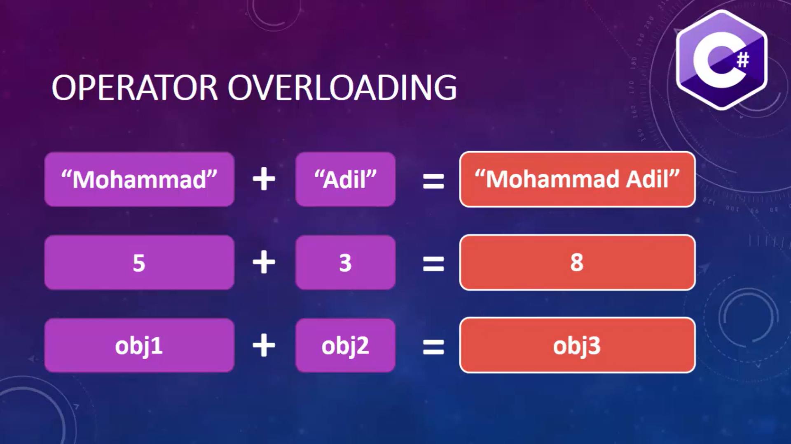
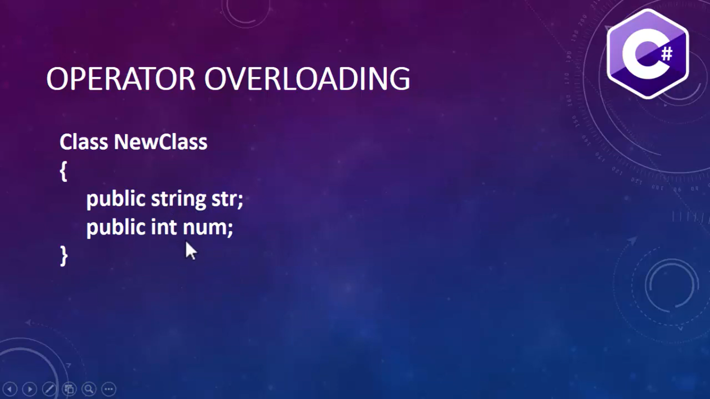
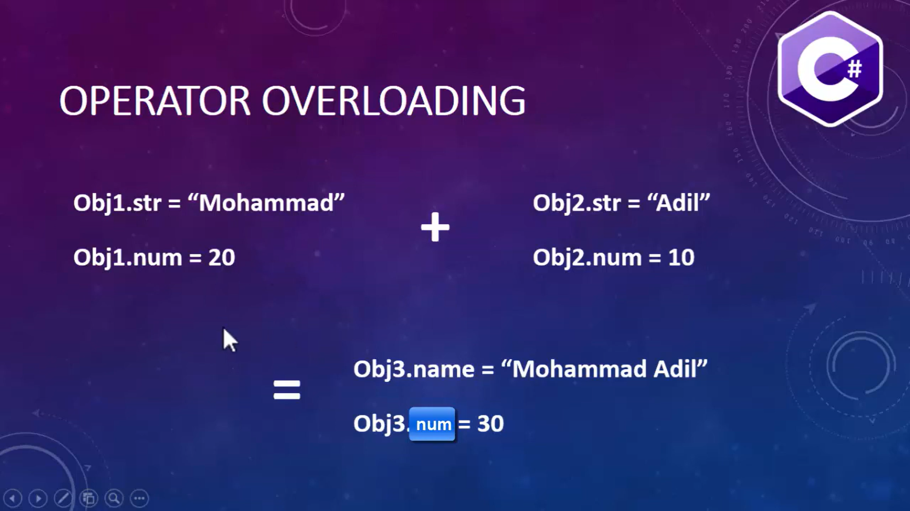
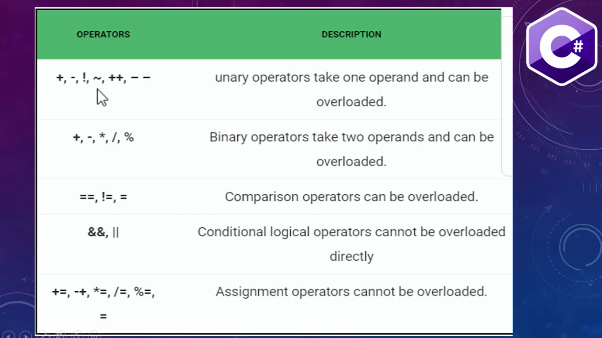
Program : Create a program to overload thje + operator such that it will add two object and return a single object with the sum of numbers and concatination of string.
Program.cs
using System;
class Sample
{
public string str;
public int num;
public static Sample operator +(Sample obj1, Sample obj2)
{
Sample obj3 = new Sample();
obj3.str = obj1.str+" "+obj2.str;
obj3.num = obj1.num+obj2.num;
return obj3;
}
}
class Program
{
public static void Main()
{
Sample obj1 = new Sample();
obj1.str = "Hello";
obj1.num = 1;
Sample obj2 = new Sample();
obj2.str = "World";
obj2.num = 2;
Sample obj3 = new Sample();
obj3 = obj1 + obj2;
Console.WriteLine(obj3.str +" "+obj3.num);
}
}
METHOD HIDING IN C# PROGRAMMING
Method Hiding
Method hiding occurs in inheritance relationship when base class and derived class both have a method with same name and same signature.
When we create the object of derived class it will hide the base class method and will call its own method and this is called method hiding or name hiding in C# inheritance.
We use "new' keyword in derived function name to show that implementation of the function in derived class is intentional and derived class no longer want to use base class method.
NOTE: If we do not use "new" keyword then compiler will raise only warning, but, program will work fine.
DIFFERENT WAYS TO CALL A HIDDEN BASE CLASS MEMBER FROM DERIVED CLASS
1. USE BASE KEYWORD 2. CAST CHILD TVE TO PARENT TYPE AND INVOKE THE HIDDEN MEMBER. 3. ParentClass PC = new ChildClass(); PC.hiddenMethod();
PARENT CLASS CAN HAVE THE REFERENCE OF ITS CHILD CLASS.
WHEN WE CREATE THE OBJECT OF CHILD CLASS, PARENT CLASS OBJECT IS ALSO CREATED.
Program : Create a Parent Class and a Child Class using Inheritance. Show that We can hide the parent class method with the class method.
Program.cs
using System;
class Parent
{
public void Show()
{
Console.WriteLine("Parent Class Method.");
}
}
class Child:Parent
{
public new void Show()
{
//base.Show();//If we want Parent method get called
Console.WriteLine("Child Class Method.");
}
}
class Program
{
public static void Main()
{
//Parent P = new Parent();
//P.Show();
//Child C = new Child();
//C.Show();// Generally Child class mehod get called
//((Parent)C).Show();//First way if we want parent method
Parent P=new Child();//Second way if we want parent method
P.Show();
}
}
Program : Create a parent class Employee and two child classes FullTimeEmployee and PartTimeEmployee. With the help of method hiding show that base class method is hiding with child class method.
Program.cs
using System;
class Employee
{
public string FirstName {get;set;}
public string LastName { get;set;}
public void PrintFullName()
{
Console.WriteLine(FirstName + " " +LastName);
}
}
class FullTimeEmployee:Employee
{
public void PrintFullName()
{
Console.WriteLine(FirstName + " " + LastName + " - FTE");
}
}
class PartTimeEmployee : Employee
{
public void PrintFullName()
{
Console.WriteLine(FirstName + " " + LastName + " - PTE");
}
}
class Program
{
public static void Main()
{
FullTimeEmployee employee = new FullTimeEmployee();
employee.FirstName = "Kumar";
employee.LastName = "Saurav";
employee.PrintFullName();
}
}
DYNAMIC OR RUNTIME POLYMORPHISM IN C#
Dynamic Polymorphism
RUN TIME POLYMORPISM IS ACHIEVED BY METHOD OVERRIDING
METHOD OVERRIDING ALLOWS US TO HAVE VIRTUAL AND ABSTRACT METHODS IN THE BASE USING DERIVED CLASSES WITH THE SAME NAME AND THE SAME PARAMETER.
Method hiding me hum parent ka object call kr skte the intentionally but method overriding hum isliye bnate hai ki parent ka method k jagah har baar child ka method call ho. Note: Parent p=new Child(); Child ka call hoga jabki method hiding me Parent ka hota tha.
C# METHOD OVERRIDING
If derived class defines same method as defined in its base class, it is known as method overriding.
It is used to achieve runtime polymorphism.
It enables you to provide specific implementation of the method in child class which is already provided by its base class.
To perform method overriding in C#, you need to use virtual keyword with base class method and override keyword with derived class method.
A method declared using the virtual keyword is referred to as a virtual method.
In the derived class, you need to declare the inherited virtual method using the override keyword.
In the derived class, you need to declare the inherited virtual method using the override keyword which is mandatory for any virtual method that is inherited in the derived class.
The override keyword overrides the base class method in the derived class.
Program : Create a Parent and a Child Class with Inheritance. Create same method in both the classes and overrige the base class method in child class.
Program.cs
using System;
class Parent
{
public virtual void Print()
{
Console.WriteLine("Parent Class Method Called.");
}
}
class Child:Parent
{
public override void Print()
{
Console.WriteLine("Child Class Method Called.");
}
}
class Program
{
public static void Main()
{
Parent p=new Child();
p.Print();
}
}
DIFFERENCE BETWEEN METHOD HIDING AND METHOD OVERRIDING IN C#
METHOD HIDING VS METHOD OVERRIDING
METHOD HIDING
METHOD OVERRIDING
IN METHOD HIDING, A BASE CLASS REFERENCE
VARIABLE POINTING TO A CHILD CLASS OBJECT,
WILL INVOKE THE HIDDEN METHOD OF THE BASE
CLASS.
IN METHOD OVERRIDING, A BASE CLASS
REFERENCE VARIABLE POINTING TO A CHILD
CLASS OBJECT, WILL INVOKE THE OVERRIDDEN
METHOD OF THE CHILD CLASS.
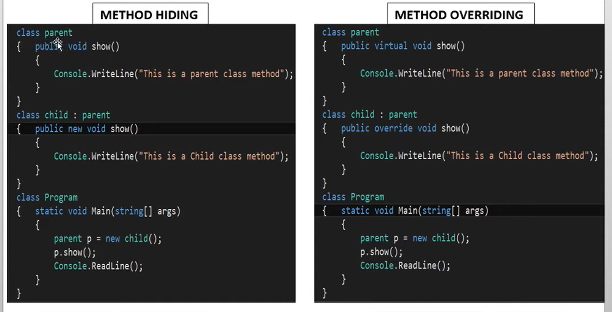
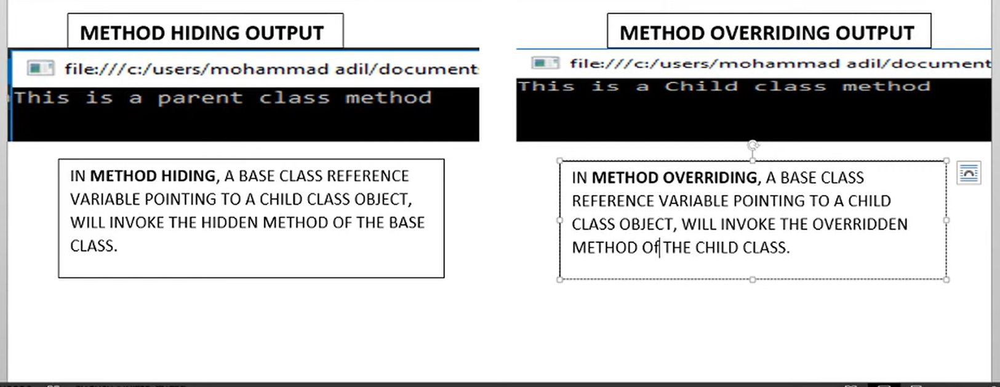
SEALED CLASS IN C# PROGRAMMING
Sealed Class
A sealed class is a class that prevents inheritance.
The features of a sealed lass are as follows:
A sealed class can be declared by preceding the class keyword with the sealed keyword.
The sealed keyword prevents a class from being inherited by any other class.
The sealed class cannot be a base class as it cannot be inherited by any other class. If a class tries to derive a sealed class, the C# compiler generates an error.
Purpose of Sealed Classes
Consider a class named Systemlnformation that consists of critical methods that affect the working of the operating system.
You might not want any third party to inherit the class Systemlnformation and override its methods, thus, causing security and copyright issues.
Here, you can declare the Systemlnformation class as sealed to prevent any change in its variables and methods.
Program : Create a basic Program to show that when a class is made sealed it will give an error while inheritance.
Program.cs
using System;
sealed class Parent
{
public void Print1()
{
Console.WriteLine("Parent Class Method Called.");
}
}
class Child:Parent //Gives an Error
{
public void Print2()
{
Console.WriteLine("Child Class Method Called.");
}
}
class Program
{
public static void Main()
{
Parent p=new Child(); //Gives an Error
p.Print1();
}
}